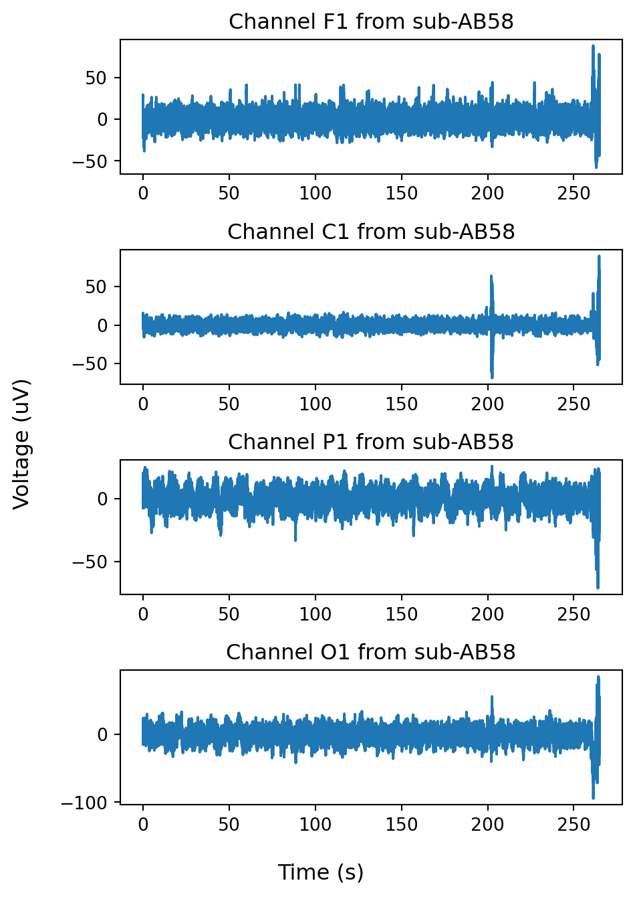

import os
import pickle
import os.path as op
import pandas as pd
import numpy as np
import scipy.io as sio
import scipy.signal as ss
import scipy.stats as st
import matplotlib.pyplot as pltWeek 2
The most accessible way to measure brain activity is using electrodes placed on the scalp, referred to as electroencephalography (EEG). These are weak signals, on the order of 10s of microvolts (uV), which is ~100,000 times weaker than the voltage of a AAA battery. To measure these we use specialized electrodes and amplifiers. We will only briefly discuss these since this course is focused on the signal processing and data analysis end of BCI.
What we will cover
- How EEG signals are acquired
- Loading them with Python
- Preprocessing and cleaning them
- Extracting event-related potentials
Acquisition of EEG
EEG was one of the first widely accessible ways to track the activity of awake behaving subjects. It was developed in the 1920s by Hans Berger. He found that by inserting metal electrodes into the scalp, he was able to detect extremely weak electrical signals. While initially dismissed by the scientific community, his work was subsequently validated by the prominent neurophysiologist E.D. Adrien. Given the ease of obtaining the EEG signal, and that it did not require opening up the skull, it rapidly became a widespread tool for the study of brain activity. Today, it is commonly used in medicine to help diagnose medical conditions, such as epilepsy, characterize sleep disturbances using polysomnography, and in research labs to further our understanding of brain function. It is also a technique for studying brain activity that is readily accessible to the amateur, with many companies selling do-it-yourself EEG recording kits (e.g. OpenBCI). For a thorough manual on acquiring and interpreting EEG signals check out Niedermeyer’s Electroencephalography book.
EEG signal
As we reviewed in Week 1, the transmembrane currents of neurons produce voltages that can be picked up by electrodes. As those electrodes are moved farther away from the neurons, this voltage falls off. When the electrode reaches the surface of the scalp, the voltage from any individual neuron is so weak that it cannot be distinguished from another. Instead, it is the shared transmembrane currents across all the neurons within several centimeters of the electrode that make up the EEG signal. At the end of last week we saw that the very large currents arising from action potentials independently firing in single neurons were not visible once we were 2 cm away from them. However the weaker, but shared, synaptic currents were evident. It is estimated that the total area of cortex required to be coactivated sufficiently to generate a detectable scalp potential is around 6 cm2 (Ebersole 1997). Consequently, the EEG reflects widespread activation of cortical tissue.

Our simplified model ignored a few details that apply to real brains and that influence the EEG. First, neurons are not ‘point-sources’, i.e. they are not a single current source but have dendrites that currents also flow through. This create a dipole that influences the distribution of transmembrane currents and the voltages recorded at the scalp.
Second, the cortex is not a flat sheet of neurons but instead has a convoluted surface, with neurons oriented at different angles with respect to the scalp. This angling affects both the magnitude and the sign of voltage picked up on the scalp, making it exceptionally difficult to reconstruct exactly what neural sources generated any recorded potential.
Lastly, we assumed that the conductivity of the tissue between the neuron and the scalp electrode was Ohmic (homogeneous), but this is not the case. A neural potential passes through brain tissue, the cerebrospinal fluid, dura mater that encapsulates the brain, bone of the skull, and the skin. These tissues have different conductivities, further complicating the reconstruction of the underlying neural generators.
Electrode placement
The electrodes used in EEG research are small metal discs that are pressed into a conductive gel resting on the scalp. This gel allows electrical activity on the scalp to easily conduct to the electrode. Often the skin under the gel has to be abraded a bit to remove the top layer of dead skin cells and oil that have low conductivity.
While it is not possible to exactly reconstruct the EEG sources, by placing multiple electrodes across the scalp one can observe some coarse localization of brain activity (see here for a nice discussion). For instance, presenting an auditory stimulus elicits a potential over the portion of the scalp overlying the temporal lobe, where auditory cortex is, while visual stimuli elicit potentials over occipital cortex, where visual cortex is. So, there seems to be some loose relationship between a signal in the EEG and the source of that signal. This highlights the need to place multiple electrodes over the scalp to get a complete picture of the brain activity.
In 1958 a standard was adopted for placement and naming of EEG electrodes with respect to features on the skull. It has been updated periodically over the decades (Guidelines for Standard Electrode Position Nomenclature), with the most recent incarnation known as the 10-20 system. The 10 refers to the percent distance between adjacent electrodes along the front-back axis of the skull (also referred to as rostro-caudal or anterior-posterior). 20 refers to the percent distance between adjacent electrodes along the left-right axis of the skull (also referred to as medial-lateral). Electrodes are named with a combination of letters and numbers. Each starts with letters corresponding to the region of the brain they lie immediately over:
| Brain region | Lettered indicator |
|---|---|
| Prefrontal | Fp |
| Frontal | F |
| Central | C |
| Temporal | T |
| Parietal | P |
| Occipital | O |
Each is followed by a number or the letter ‘z’. ‘z’ is used for sites along the midline, even numbers on the right hemisphere, and odd numbers on the left hemisphere. The numbers start at 1 and increase as electrode sites are moved away from the midline, i.e. laterally. This layout looks like:
Recently, the number of recording sites has increased because of advances the miniaturization of recording systems. The recordings we will draw from for these lectures use the 10-20 extended system, that features more recording sites. In addition to the names used above, also included are sites that are equally close to two areas and will have their letters joined, e.g. FC (frontal-central) and PO (parietal-occipital). Its layout is:
Besides the electrodes that are explicitly targeted to record brain activity, additional electrodes are used for referencing and detection of contaminating noise and artifacts.
Referencing
Since voltage is a measure of the work needed to move a charge from one place to another, it is always measured between two points. The point whose signal we seek to measure is referred to as the active site. It is measured with respect to another point, the ground. Ideally, the ground would be at a point in space that is infinitely far away from the electrode and with no charges near it to contaminate the potential we are attempting to measure at the EEG site. This is not practical (nor would it work due to limitations in electronic hardware). Instead, researchers often place the ground immediately behind the ear (referred to as the mastoid). If we only measured our signal at the active site then we face a new problem: there are numerous sources of environmental electrical noise that envelope the entire head, such as emissions from the AC power in the walls. To eliminate that, one also records from a reference electrode, whose signal is subtracted from the active. Any signal that is shared between the active and reference sites is removed (which includes signal at the ground site, since both the active and reference are measured relative to the same ground electrode). The degree of removal is referred to as the common-mode rejection ratio and depends on the quality of the amplifiers and conductivity between the electrodes and scalp. A good common-mode rejection ratio is 70 decibels (dB), which means that the shared signal is reduced by a factor of 10,000,000 (dB = 10log_{10}(x))!
Loading and inspecting the EEG
What does the EEG signal look like? Let’s load and visualize some EEG data.
The datasets we will work with are structured in a standardized way, which should make it easy to adapt our code between them. This data is coming from openneuro.org, a public repository of neural activity recordings from humans across a range of measures (e.g. EEG, MEG, fMRI). We will focus on EEG datasets.
Each dataset is organized as a collection of nested directories. In the top most directory we have a README file that gives details about how the EEG was recorded and the tasks that subjects performed during the recording. For the one we will work with over the next few weeks, they recorded responses to auditory and visual stimuli under under a variety of conditions.
Each subject will have their own subdirectory, which contains directories for different aspects of the experiment. There should be one labeled ‘eeg’, where the eeg data is. Sometimes you also see a ‘beh’ folder, which has the behavior of the subject. Within the eeg folder we will focus on the *.set files. These are produced by the EEGLAB toolbox in MATLAB and contain both the EEG data and additional data about electrode names, referencing, etc.
To load the set file, we use the loadmat method in the Scipy IO package.
# load the a .set file
subj = 'sub-AB58'
data_dir = ['.', 'data', 'eeg', 'ds003690', subj, 'eeg', '{}_task-passive_run-1_eeg.set'.format(subj)]
eeg_file = op.join(*data_dir) # use * to unpack the list
eeg = sio.loadmat(eeg_file, appendmat=False)A few notes about the file paths and names. In the course directory we include a ‘data’ directory that contains folders to the datasets we want to work with. This allows us to use a relative file path, where we don’t have to specify the entire list of directories that lead up the the one we are presently in (known as the absolute file path). This improves portability of the code, because someone else could put this on their computer and not have to change the file path. Another thing we do is specify the directories as a list of strings, and use the join function in the python os package to paste these together into a file name. This is because depending on whether you are running the code on a Windows, Mac, or Linux computer, the directory separator will be different (‘\’ for windows, ‘/’ for Max and Linux).
In the course directory we have a folder ‘data’ , which contains all the data files for this course.
Another thing to notice is that the file names are descriptive. For the .set file above, the subject name (‘sub-AB58’), task (‘task-passive’), and experimental run (‘run-1’), and data type (‘eeg’) are given. These are separated by underscores. This standard formulation makes it easier to quickly look at the files in a directory and determine which ones are relevant to us and write code that automatically accesses files from specific subjects or tasks.
Once the eeg data is loaded in, we should inspect it to determine its data type and contents.
# get data type
type(eeg)dictThe eeg data returned by the loadmat function is a dictionary type. Just to refresh, a dictionary is a data type in python containing a collection of keys, where each key is associated with a value.
# get keys
eeg.keys()dict_keys(['__header__', '__version__', '__globals__', 'setname', 'filename', 'filepath', 'subject', 'group', 'condition', 'session', 'comments', 'nbchan', 'trials', 'pnts', 'srate', 'xmin', 'xmax', 'times', 'data', 'icaact', 'icawinv', 'icasphere', 'icaweights', 'icachansind', 'chanlocs', 'urchanlocs', 'chaninfo', 'ref', 'event', 'urevent', 'eventdescription', 'epoch', 'epochdescription', 'reject', 'stats', 'specdata', 'specicaact', 'splinefile', 'icasplinefile', 'dipfit', 'history', 'saved', 'etc', 'datfile', 'run'])If you go through the keys, some of these are self-explanatory and give information about the experiment. These are not always filled in, so don’t depend on them. Instead, we will focus on:
- ‘srate’ - the sample rate in Hz. This is how many voltage measurements were made each second per EEG site
- ‘data’ - the EEG data
- ‘chaninfo’ - the names of the eeg data channels. We can use these to determine where each EEG signal came from.
- ‘ref’ - where the reference channel is
Let’s see what their data types are and their values. We will create a simple function, var_inspector, to display the data type and values of each variable.
def var_inspector(var):
print('Type: {}'.format(type(var)))
print(var)
# srate
srate = eeg['srate']
var_inspector(srate)Type: <class 'numpy.ndarray'>
[[500]]srate is a 2-D numpy array with a single value. To pull out just the numeric value, we index into the numpy array:
srate = srate[0,0]Next we will get the chaninfo data.
chan_info = eeg['chaninfo']
var_inspector(chan_info)Type: <class 'numpy.ndarray'>
[[(array(['D:\\ProjectAgingNeuromodulation\\AuditoryResearch\\EEGLAB_analysis\\chanlocs_corrected\\AB58_locs_corrected.DAT'],
dtype='<U106'), array(['Fp1 69 -2.854012 12.903291 -1.520481 ',
'Fpz 69 0.583218 13.494058 -1.592608 ',
'Fp2 69 3.935400 12.477923 -2.102277 ',
'AF3 69 -3.023524 12.428141 1.361401 ',
'AF4 69 4.304501 11.727693 0.427403 ',
'F7 69 -6.639328 8.170529 -1.526560 ',
'F5 69 -5.876012 9.542894 0.800148 ',
'F3 69 -4.229360 10.265764 2.418731 ',
'F1 69 -1.882614 11.018632 4.587177 ',
'Fz 69 0.596303 10.217070 4.293318 ',
'F2 69 3.996278 10.694478 3.944555 ',
'F4 69 5.631967 9.848669 2.084015 ',
'F6 69 6.969560 8.879675 -0.060155 ',
'F8 69 7.878357 7.523402 -2.148623 ',
'FT7 69 -7.918441 5.400486 -0.685157 ',
'FC5 69 -6.848348 6.444450 1.872787 ',
'FC3 69 -5.007377 6.820720 4.378383 ',
'FC1 69 -2.332303 7.275606 6.020996 ',
'FCz 69 0.892164 7.275017 6.676030 ',
'FC2 69 3.868832 7.218509 5.929260 ',
'FC4 69 6.393416 6.765655 4.161855 ',
'FC6 69 8.110071 5.963853 1.523854 ',
'FT8 69 8.880818 4.564967 -1.282408 ',
'T7 69 -8.341170 2.798480 0.226452 ',
'C5 69 -7.438693 3.373324 3.054235 ',
'C3 69 -5.931186 3.709710 6.488027 ',
'C1 69 -2.569554 3.746717 7.996653 ',
'Cz 69 1.032521 3.911274 8.476038 ',
'C2 69 4.350667 3.569207 7.594067 ',
'C4 69 6.801077 3.610167 5.548478 ',
'C6 69 9.023433 2.739705 2.800857 ',
'T8 69 8.986069 1.829011 -0.226452 ',
'M1 69 -7.644597 -0.549069 -8.007587 ',
'TP7 69 -8.254624 -0.373276 1.011124 ',
'CP5 69 -7.370408 0.278624 4.028963 ',
'CP3 69 -5.316664 0.049608 6.245472 ',
'CP1 69 -2.702063 0.250874 8.319883 ',
'CPz 69 0.627199 -0.010582 8.411424 ',
'CP2 69 4.188373 -0.366793 7.784681 ',
'CP4 69 6.730657 -0.589212 6.652807 ',
'CP6 69 8.320402 -0.371316 3.731920 ',
'TP8 69 8.799763 -0.721895 0.744581 ',
'M2 69 7.864402 -0.341263 -8.226876 ',
'P7 69 -7.147690 -2.857133 1.425296 ',
'P5 69 -5.896095 -3.084760 3.659961 ',
'P3 69 -3.990392 -3.311368 5.491853 ',
'P1 69 -1.790996 -3.225753 6.718182 ',
'Pz 69 0.559499 -2.994738 7.218447 ',
'P2 69 2.982983 -3.442504 6.627176 ',
'P4 69 5.367558 -3.552835 5.125538 ',
'P6 69 6.927846 -3.798552 3.392559 ',
'P8 69 7.864575 -3.658688 1.023157 ',
'PO7 69 -5.260816 -5.210424 1.680544 ',
'PO5 69 -3.805657 -5.398441 3.520525 ',
'PO3 69 -1.695287 -5.760008 4.798353 ',
'POz 69 0.620948 -5.819869 5.205846 ',
'PO4 69 2.894593 -5.904253 4.664386 ',
'PO6 69 4.777563 -6.086181 3.030508 ',
'PO8 69 6.204419 -5.931612 1.100191 ',
'CB1 69 -2.746747 -7.905792 0.181570 ',
'O1 69 -2.994389 -7.100698 1.760379 ',
'Oz 69 0.396758 -7.928689 2.063318 ',
'O2 69 3.565017 -7.643452 1.469474 ',
'CB2 69 3.304482 -8.550863 -0.418131 ',
'VEO 69 -4.985376 9.402884 -3.997588 ',
'HEO 69 -6.256028 5.891592 -6.051630 ',
'EKG 69 -6.121837 -3.762735 -10.496158',
'EMG 69 -5.970550 -4.868990 -11.655138'], dtype='<U37'), array([], shape=(0, 0), dtype=uint8), array([], shape=(0, 0), dtype=uint8), array(['+X'], dtype='<U2'), array([], shape=(0, 0), dtype=uint8), array([], shape=(0, 0), dtype=uint8), array([], shape=(0, 0), dtype=uint8))]]It is a bit more complicated. This is a numpy array of numpy arrays of strings.
# get the channel names
chan_info = chan_info[0,0][1]
var_inspector(chan_info)Type: <class 'numpy.ndarray'>
['Fp1 69 -2.854012 12.903291 -1.520481 '
'Fpz 69 0.583218 13.494058 -1.592608 '
'Fp2 69 3.935400 12.477923 -2.102277 '
'AF3 69 -3.023524 12.428141 1.361401 '
'AF4 69 4.304501 11.727693 0.427403 '
'F7 69 -6.639328 8.170529 -1.526560 '
'F5 69 -5.876012 9.542894 0.800148 '
'F3 69 -4.229360 10.265764 2.418731 '
'F1 69 -1.882614 11.018632 4.587177 '
'Fz 69 0.596303 10.217070 4.293318 '
'F2 69 3.996278 10.694478 3.944555 '
'F4 69 5.631967 9.848669 2.084015 '
'F6 69 6.969560 8.879675 -0.060155 '
'F8 69 7.878357 7.523402 -2.148623 '
'FT7 69 -7.918441 5.400486 -0.685157 '
'FC5 69 -6.848348 6.444450 1.872787 '
'FC3 69 -5.007377 6.820720 4.378383 '
'FC1 69 -2.332303 7.275606 6.020996 '
'FCz 69 0.892164 7.275017 6.676030 '
'FC2 69 3.868832 7.218509 5.929260 '
'FC4 69 6.393416 6.765655 4.161855 '
'FC6 69 8.110071 5.963853 1.523854 '
'FT8 69 8.880818 4.564967 -1.282408 '
'T7 69 -8.341170 2.798480 0.226452 '
'C5 69 -7.438693 3.373324 3.054235 '
'C3 69 -5.931186 3.709710 6.488027 '
'C1 69 -2.569554 3.746717 7.996653 '
'Cz 69 1.032521 3.911274 8.476038 '
'C2 69 4.350667 3.569207 7.594067 '
'C4 69 6.801077 3.610167 5.548478 '
'C6 69 9.023433 2.739705 2.800857 '
'T8 69 8.986069 1.829011 -0.226452 '
'M1 69 -7.644597 -0.549069 -8.007587 '
'TP7 69 -8.254624 -0.373276 1.011124 '
'CP5 69 -7.370408 0.278624 4.028963 '
'CP3 69 -5.316664 0.049608 6.245472 '
'CP1 69 -2.702063 0.250874 8.319883 '
'CPz 69 0.627199 -0.010582 8.411424 '
'CP2 69 4.188373 -0.366793 7.784681 '
'CP4 69 6.730657 -0.589212 6.652807 '
'CP6 69 8.320402 -0.371316 3.731920 '
'TP8 69 8.799763 -0.721895 0.744581 '
'M2 69 7.864402 -0.341263 -8.226876 '
'P7 69 -7.147690 -2.857133 1.425296 '
'P5 69 -5.896095 -3.084760 3.659961 '
'P3 69 -3.990392 -3.311368 5.491853 '
'P1 69 -1.790996 -3.225753 6.718182 '
'Pz 69 0.559499 -2.994738 7.218447 '
'P2 69 2.982983 -3.442504 6.627176 '
'P4 69 5.367558 -3.552835 5.125538 '
'P6 69 6.927846 -3.798552 3.392559 '
'P8 69 7.864575 -3.658688 1.023157 '
'PO7 69 -5.260816 -5.210424 1.680544 '
'PO5 69 -3.805657 -5.398441 3.520525 '
'PO3 69 -1.695287 -5.760008 4.798353 '
'POz 69 0.620948 -5.819869 5.205846 '
'PO4 69 2.894593 -5.904253 4.664386 '
'PO6 69 4.777563 -6.086181 3.030508 '
'PO8 69 6.204419 -5.931612 1.100191 '
'CB1 69 -2.746747 -7.905792 0.181570 '
'O1 69 -2.994389 -7.100698 1.760379 '
'Oz 69 0.396758 -7.928689 2.063318 '
'O2 69 3.565017 -7.643452 1.469474 '
'CB2 69 3.304482 -8.550863 -0.418131 '
'VEO 69 -4.985376 9.402884 -3.997588 '
'HEO 69 -6.256028 5.891592 -6.051630 '
'EKG 69 -6.121837 -3.762735 -10.496158'
'EMG 69 -5.970550 -4.868990 -11.655138']Each channel is given as a string, with its name followed by a string of numbers, which represent the 3D position of each electrode on the scalp (X, Y, Z). We can break these out using the built in split method associated with the python string object (by the way, to see all the methods available for a string, you can pass the string variable to the dir method).
# use split the strings in chan_names by white space
chan_names = [name.split()[0] for name in chan_info]
var_inspector(chan_names)
print('Channel number: {}'.format(len(chan_names)))Type: <class 'list'>
['Fp1', 'Fpz', 'Fp2', 'AF3', 'AF4', 'F7', 'F5', 'F3', 'F1', 'Fz', 'F2', 'F4', 'F6', 'F8', 'FT7', 'FC5', 'FC3', 'FC1', 'FCz', 'FC2', 'FC4', 'FC6', 'FT8', 'T7', 'C5', 'C3', 'C1', 'Cz', 'C2', 'C4', 'C6', 'T8', 'M1', 'TP7', 'CP5', 'CP3', 'CP1', 'CPz', 'CP2', 'CP4', 'CP6', 'TP8', 'M2', 'P7', 'P5', 'P3', 'P1', 'Pz', 'P2', 'P4', 'P6', 'P8', 'PO7', 'PO5', 'PO3', 'POz', 'PO4', 'PO6', 'PO8', 'CB1', 'O1', 'Oz', 'O2', 'CB2', 'VEO', 'HEO', 'EKG', 'EMG']
Channel number: 68These names should be familiar from our discussion of electrode placement. What about the locations of the channels?
# get the channel positions on the scalp
chan_locs = [name.split()[2:] for name in chan_info]
# convert chan_locs to numeric data type in a numpy array
chan_locs = np.array(chan_locs, dtype=float)
var_inspector(chan_locs)Type: <class 'numpy.ndarray'>
[[-2.8540120e+00 1.2903291e+01 -1.5204810e+00]
[ 5.8321800e-01 1.3494058e+01 -1.5926080e+00]
[ 3.9354000e+00 1.2477923e+01 -2.1022770e+00]
[-3.0235240e+00 1.2428141e+01 1.3614010e+00]
[ 4.3045010e+00 1.1727693e+01 4.2740300e-01]
[-6.6393280e+00 8.1705290e+00 -1.5265600e+00]
[-5.8760120e+00 9.5428940e+00 8.0014800e-01]
[-4.2293600e+00 1.0265764e+01 2.4187310e+00]
[-1.8826140e+00 1.1018632e+01 4.5871770e+00]
[ 5.9630300e-01 1.0217070e+01 4.2933180e+00]
[ 3.9962780e+00 1.0694478e+01 3.9445550e+00]
[ 5.6319670e+00 9.8486690e+00 2.0840150e+00]
[ 6.9695600e+00 8.8796750e+00 -6.0155000e-02]
[ 7.8783570e+00 7.5234020e+00 -2.1486230e+00]
[-7.9184410e+00 5.4004860e+00 -6.8515700e-01]
[-6.8483480e+00 6.4444500e+00 1.8727870e+00]
[-5.0073770e+00 6.8207200e+00 4.3783830e+00]
[-2.3323030e+00 7.2756060e+00 6.0209960e+00]
[ 8.9216400e-01 7.2750170e+00 6.6760300e+00]
[ 3.8688320e+00 7.2185090e+00 5.9292600e+00]
[ 6.3934160e+00 6.7656550e+00 4.1618550e+00]
[ 8.1100710e+00 5.9638530e+00 1.5238540e+00]
[ 8.8808180e+00 4.5649670e+00 -1.2824080e+00]
[-8.3411700e+00 2.7984800e+00 2.2645200e-01]
[-7.4386930e+00 3.3733240e+00 3.0542350e+00]
[-5.9311860e+00 3.7097100e+00 6.4880270e+00]
[-2.5695540e+00 3.7467170e+00 7.9966530e+00]
[ 1.0325210e+00 3.9112740e+00 8.4760380e+00]
[ 4.3506670e+00 3.5692070e+00 7.5940670e+00]
[ 6.8010770e+00 3.6101670e+00 5.5484780e+00]
[ 9.0234330e+00 2.7397050e+00 2.8008570e+00]
[ 8.9860690e+00 1.8290110e+00 -2.2645200e-01]
[-7.6445970e+00 -5.4906900e-01 -8.0075870e+00]
[-8.2546240e+00 -3.7327600e-01 1.0111240e+00]
[-7.3704080e+00 2.7862400e-01 4.0289630e+00]
[-5.3166640e+00 4.9608000e-02 6.2454720e+00]
[-2.7020630e+00 2.5087400e-01 8.3198830e+00]
[ 6.2719900e-01 -1.0582000e-02 8.4114240e+00]
[ 4.1883730e+00 -3.6679300e-01 7.7846810e+00]
[ 6.7306570e+00 -5.8921200e-01 6.6528070e+00]
[ 8.3204020e+00 -3.7131600e-01 3.7319200e+00]
[ 8.7997630e+00 -7.2189500e-01 7.4458100e-01]
[ 7.8644020e+00 -3.4126300e-01 -8.2268760e+00]
[-7.1476900e+00 -2.8571330e+00 1.4252960e+00]
[-5.8960950e+00 -3.0847600e+00 3.6599610e+00]
[-3.9903920e+00 -3.3113680e+00 5.4918530e+00]
[-1.7909960e+00 -3.2257530e+00 6.7181820e+00]
[ 5.5949900e-01 -2.9947380e+00 7.2184470e+00]
[ 2.9829830e+00 -3.4425040e+00 6.6271760e+00]
[ 5.3675580e+00 -3.5528350e+00 5.1255380e+00]
[ 6.9278460e+00 -3.7985520e+00 3.3925590e+00]
[ 7.8645750e+00 -3.6586880e+00 1.0231570e+00]
[-5.2608160e+00 -5.2104240e+00 1.6805440e+00]
[-3.8056570e+00 -5.3984410e+00 3.5205250e+00]
[-1.6952870e+00 -5.7600080e+00 4.7983530e+00]
[ 6.2094800e-01 -5.8198690e+00 5.2058460e+00]
[ 2.8945930e+00 -5.9042530e+00 4.6643860e+00]
[ 4.7775630e+00 -6.0861810e+00 3.0305080e+00]
[ 6.2044190e+00 -5.9316120e+00 1.1001910e+00]
[-2.7467470e+00 -7.9057920e+00 1.8157000e-01]
[-2.9943890e+00 -7.1006980e+00 1.7603790e+00]
[ 3.9675800e-01 -7.9286890e+00 2.0633180e+00]
[ 3.5650170e+00 -7.6434520e+00 1.4694740e+00]
[ 3.3044820e+00 -8.5508630e+00 -4.1813100e-01]
[-4.9853760e+00 9.4028840e+00 -3.9975880e+00]
[-6.2560280e+00 5.8915920e+00 -6.0516300e+00]
[-6.1218370e+00 -3.7627350e+00 -1.0496158e+01]
[-5.9705500e+00 -4.8689900e+00 -1.1655138e+01]]Since these were strings, we had to convert them to a numeric data type, especially if we want to eventually use them for plotting.
def plot_scalp(chan_locs, chan_names, subj):
fig, ax = plt.subplots()
ax.scatter(chan_locs[:,0], chan_locs[:,1])
for ind, name in enumerate(chan_names):
ax.text(chan_locs[ind,0], chan_locs[ind,1], name)
ax.set_xlabel('Medial-lateral')
ax.set_ylabel('Anterior-posterior')
ax.set_title('Channel locations for {}'.format(subj))
ax.set_aspect('equal')
plot_scalp(chan_locs, chan_names, subj)Another useful piece of info in the eeg data is ‘ref’, which tells us the position of the reference electrode.
ref_elec = eeg['ref']
var_inspector(ref_elec)Type: <class 'numpy.ndarray'>
['between_Cz_and_CPz']This is another numpy array with a string inside. Let’s extract the channels the reference was between, and then use their coordinates to plot where the reference was.
# split the reference string at underscores and return the channel names
near_ref_names = [ref for ref in ref_elec[0].split('_') if ref in chan_names]
print('Reference channel was near: {}'.format(near_ref_names))
# get the coordinates of the reference electrodes
near_ref_coords = [chan_locs[chan_names.index(ref)] for ref in near_ref_names]
# print near ref coords with only 2 decimal places
print('Coordinates of electrodes near reference: {}'.format(np.round(near_ref_coords,2)))
# get the average of the coordinates
ref_coord = np.mean(near_ref_coords, axis=0)
print('Coordinates of reference: {}'.format(np.round(ref_coord,2)))
# plot the reference electrode
plot_scalp(chan_locs, chan_names, subj)
plt.scatter(ref_coord[0], ref_coord[1], c='r', s=100)
plt.text(ref_coord[0], ref_coord[1], 'REF')Reference channel was near: ['Cz', 'CPz']
Coordinates of electrodes near reference: [[ 1.03 3.91 8.48]
[ 0.63 -0.01 8.41]]
Coordinates of reference: [0.83 1.95 8.44]Text(0.82986, 1.9503460000000001, 'REF')With all this out of the way, let’s inspect the EEG data itself.
eeg_data = eeg['data']
var_inspector(eeg_data)Type: <class 'numpy.ndarray'>
[[-17487.854 -17494.352 -17504.037 ... -17945.916 -17952.68
-17949.879 ]
[-22107.213 -22104.95 -22108.615 ... -22745.281 -22717.625
-22711.635 ]
[ -5888.045 -5887.7466 -5885.6606 ... -5802.661 -5804.211
-5797.6245 ]
...
[ -1053.0055 -1051.8431 -1050.8597 ... -422.0903 -421.13663
-418.2458 ]
[ 0. 0. 0. ... 0. 0.
0. ]
[ 0. 0. 0. ... 0. 0.
0. ]]Another numpy array, but this one contains a lot of numeric data. We can get the number of channels and time points that were recorded.
nchan = eeg_data.shape[0]
nsamp = eeg_data.shape[1]
print('Number of samples: {}'.format(nsamp))
print('Duration of recording: {} seconds'.format(nsamp/srate)) # dividing number of samples by sampling rate gives the duration of the recording
print('Number of channels: {}'.format(nchan))Number of samples: 132480
Duration of recording: 264.96 seconds
Number of channels: 66Uh oh, the number of channels, 66, does not match the number given in chaninfo, 68. Perhaps we can find the correct values in the file ‘*_channels.tsv’.
# load the a *_channels.tsv file
subj = 'sub-AB58'
chan_dir = ['.', 'data', 'eeg', 'ds003690', subj, 'eeg', '{}_task-passive_run-1_channels.tsv'.format(subj)]
chan_file = op.join(*chan_dir) # use * to unpack the list
channels = pd.read_csv(chan_file, sep='\t')
print(channels) name type units
0 AF3 EEG uV
1 AF4 EEG uV
2 F7 EEG uV
3 F5 EEG uV
4 F3 EEG uV
.. ... ... ...
61 VEO VEOG uV
62 HEO HEOG uV
63 EKG ECG uV
64 R-Dia-X-(mm) PUPIL mm
65 R-Dia-Y-(mm) PUPIL mm
[66 rows x 3 columns]Notice how the number of channels listed in the .tsv file is the same as those in our EEG data. This is probably the correct file for figuring out where each channel was recorded.
The .tsv file type stands for tab separated values. It is a table of data stored in a text file, where each row is a different line, and each column is separated by a tab. Often the first line of text gives the names for each column, but this is not necessary. It looks like this if you open in a text editor:
It is difficult to compare the list of recording sites in chaninfo and those listed in the channels .tsv file by eye, but we can write some code to solve that problem.
# pull the channel names from the channels tsv file
chan_names_tsv = channels['name'].tolist()
# identify the channels in chan_names that are not in chan_names_tsv
missing_chan = [chan for chan in chan_names if chan not in chan_names_tsv]
print('The missing channels are: {}'.format(', '.join(missing_chan)))The missing channels are: Fp1, Fpz, Fp2, EMGWe should set chan_names to the list in the channels .tsv file and match those with the electrode locations from the eeg .set file.
chan_info = pd.DataFrame({'name': chan_names,
'ML': chan_locs[:,0],
'AP': chan_locs[:,1],
'DV': chan_locs[:,2]})
channels = pd.merge(channels, chan_info, how='left', on='name')
channels| name | type | units | ML | AP | DV | |
|---|---|---|---|---|---|---|
| 0 | AF3 | EEG | uV | -3.023524 | 12.428141 | 1.361401 |
| 1 | AF4 | EEG | uV | 4.304501 | 11.727693 | 0.427403 |
| 2 | F7 | EEG | uV | -6.639328 | 8.170529 | -1.526560 |
| 3 | F5 | EEG | uV | -5.876012 | 9.542894 | 0.800148 |
| 4 | F3 | EEG | uV | -4.229360 | 10.265764 | 2.418731 |
| ... | ... | ... | ... | ... | ... | ... |
| 61 | VEO | VEOG | uV | -4.985376 | 9.402884 | -3.997588 |
| 62 | HEO | HEOG | uV | -6.256028 | 5.891592 | -6.051630 |
| 63 | EKG | ECG | uV | -6.121837 | -3.762735 | -10.496158 |
| 64 | R-Dia-X-(mm) | PUPIL | mm | NaN | NaN | NaN |
| 65 | R-Dia-Y-(mm) | PUPIL | mm | NaN | NaN | NaN |
66 rows × 6 columns
Note that there are a few extra channels with names that are not part of the EEG site naming scheme given above. ‘VEO’ and ‘HEO’ are electrodes placed near the left eye and can detect eye movements (discussed below). ‘EKG’ is from an electrode place near the heart and gives the electrocardiogram, which captures the electrical activity associated with heart beats. Lastly, ‘R-Dia-X-(mm)’ and ‘R-Dia-Y-(mm)’ are measures of pupil diameter made by a video camera trained on the eye.
And now we can replot the EEG electrodes, with the missing channels removed.
chan_names = channels['name'].values
chan_locs = channels[['ML', 'AP', 'DV']].values
plot_scalp(chan_locs, chan_names, subj)
plt.scatter(ref_coord[0], ref_coord[1], c='r', s=100)
plt.text(ref_coord[0], ref_coord[1], 'REF')Text(0.82986, 1.9503460000000001, 'REF')posx and posy should be finite values
posx and posy should be finite values
posx and posy should be finite values
posx and posy should be finite values
posx and posy should be finite values
posx and posy should be finite valuesThe next thing to inspect is the EEG signal itself. The EEG signal is an array of voltages, EEG, sampled at each channel, ch and time point, t. A single sample can be written as EEG_{ch,t}. If we want the voltage across all channels at a specific time that would be the vector EEG_{t}. The entire time series of voltages from a single channel is expressed as EEG_{ch}. The term time series is important to keep in mind. Virtually all the data we will work with is time series data, meaning that it is the values generated by some process that is sampled at regular intervals. In the case of our present EEG signal, this would be the uV potentials recorded from an electrode at the sample rate (srate) of 500 Hz.
To begin exploring this data, lets plot the voltage detected on channel O1 (an electrode over the occiptal lobe on the left hemisphere) between 50 and 52 seconds. We will express this as: EEG_{O1}[50\leq t \le 52]
First, we identify the index for the row containing data from channel O1.
# select channel to plot
sel_chan = 'O1'
chan_ind = channels.index[channels['name']==sel_chan]Using the channels dataframe we generated above, we find the row where the ‘name’ column is equal to O1, and then return the index of that row. The indices in the channels dataframe range from 0 to 65, with each corresponding to a row in eeg_data.
Next we need to find the time points that were sampled between 50 and 52 seconds into the recording.
# set the times we wish to plot
start_t = 50
end_t = 52
start_idx = (start_t*srate).astype(int)
end_idx = (end_t*srate).astype(int)Since our recording starts at time point 0 seconds and was recorded with srate number of samples per second, we can find the indices of the start and stop times by multiplying those times in seconds by the srate (start_t*srate and end_t*srate). Since these will be used to index into an array, we ensure that they have integer values by forcing them to an integer datatype using the numpy astype function.
# extract the eeg data we wish to plot
eeg_epoch = eeg_data[chan_ind, start_idx:end_idx].squeeze() # squeeze removes the extra dimensionAn ‘epoch’ is a period of time, and when we pull out a contiguous set of values from a time series will refer to that as an epoch. When plotting that data, we need to pass both the eeg signal and their corresponding time points to the plotting function. These can either be absolute or relative. For absolute, the time values are taken with respect to the entire recording, so in our case they would start at 50 sec and end just before 52 sec. For relative time, the times at taken with respect to a specific event (usually the beginning of our epoch, but not always). In that case, they would start at 0 sec and end just before 2 sec. Calculating either is straightforward:
# time on an absolute scale
t_abs_epoch = start_t + np.arange(0, eeg_epoch.size)/srate
# time on a relative scale
t_rel_epoch = np.arange(0, eeg_epoch.size)/srateNow let’s plot on both time scales, just for show.
fig, ax = plt.subplots(2,1,figsize=(10,4))
ax[0].plot(t_abs_epoch, eeg_epoch) # we transpose to make the data the right shape for plotting
ax[0].set_xlabel('Absolute time (s)')
ax[0].set_ylabel('Voltage (uV)')
ax[1].plot(t_rel_epoch, eeg_epoch)
ax[1].set_xlabel('Relative time (s)')
ax[1].set_ylabel('Voltage (uV)')
fig.suptitle('Channel {} for {}'.format(sel_chan, subj))
fig.tight_layout()This is the electrical activity recorded on the scalp over the left occipital cortex, an area of the brain involved in visual processing. The signal has a somewhat noisy appearance, though it is unclear what is really ‘noise.’
Before we move on, let’s create a class for loading the EEG data from a file and giving us access to it. This will encompass all the operations we performed above, making it easier to load data from other subjects with the same format.
class EEG:
def __init__(self, eeg_file, chan_file):
"""
A class for loading and plotting EEG data
Parameters
----------
eeg_file : str, path to the .set file
chan_file : str, path to the _channels.tsv file
"""
# load the eeg data
self._eeg = sio.loadmat(eeg_file, appendmat=False)
data = self._eeg['data']
self.srate = self._eeg['srate'][0,0]
self.data = data
self.nchan = self.data.shape[0]
self.nsamp = self.data.shape[1]
self.dur = self.nsamp/self.srate
# load the channel info and integrate with locations
chan_info = self._eeg['chaninfo'][0,0][1]
chan_names = [name.split()[0] for name in chan_info]
chan_locs = np.array([name.split()[2:] for name in chan_info], dtype=float)
chan_info = pd.DataFrame({'name': chan_names,
'ml': chan_locs[:,0],
'ap': chan_locs[:,1],
'dv': chan_locs[:,2]})
chans = pd.read_csv(chan_file, sep='\t')
chans = pd.merge(chans, chan_info, how='left', on='name')
chans.index.name = 'idx'
self.chans = chans
# get reference electrode position
ref_elec = self._eeg['ref'][0]
near_ref_names = [ref for ref in ref_elec.split('_') if ref in chans['name'].tolist()]
near_ref_chans = chans[chans['name'].isin(near_ref_names)]
near_ref_coords = near_ref_chans[['ml', 'ap', 'dv']].to_numpy()
self.ref_coord = np.mean(near_ref_coords, axis=0)
def get_data(self, chans=None, start_t=0, dur_t=None, scale='absolute'):
"""
Extract EEG data from the EEG object
Parameters
----------
chans : list of str, the channels to extract
start_t : numeric array, the start times in seconds
dur_t : float, the duration in seconds
scale : str, 'absolute' or 'relative'
Returns
-------
data_epochs : 3d array, the eeg data
tpts : 1d array, the time vector
chans : list of str, the channels extracted
"""
# ensure proper formatting of inputs
if not chans:
chans = self.chans['name']
elif chans == 'eeg' or chans == ['eeg']: # only extract eeg channels
chans = self.chans[self.chans['type']=='EEG']['name'].values
elif type(chans) == str:
chans = [chans]
if not dur_t:
dur_t = self.dur-start_t
start_t = np.array(start_t)
start_t = start_t.ravel()
epoch_num = start_t.size
# convert times to indices
start_idxs = (start_t*self.srate).astype(int)
dur_idx = (dur_t*self.srate).astype(int)
end_idxs = start_idxs + dur_idx
# get the channel indices
chan_idxs = [np.where(self.chans['name']==sel_ch)[0][0] for sel_ch in chans]
# extract the eeg data, one epoch at a time
data_epochs = np.zeros((dur_idx, len(chan_idxs), epoch_num)) # this also ensures changes to the data don't affect the original
for i in range(epoch_num):
data_epochs[:,:,i] = self.data[chan_idxs, start_idxs[i]:end_idxs[i]].T
# get the time vector
if scale == 'absolute':
tpts = start_t + np.arange(0, dur_idx)/self.srate
elif scale == 'relative':
tpts = np.arange(0, dur_idx)/self.srate
return data_epochs, tpts, chans
def plot_scalp(self, ax=None, colors='b'):
"""
Plot the channel locations on the scalp
"""
# ensure proper formatting of inputs
if not ax:
fig, ax = plt.subplots()
chans = self.chans[self.chans['type']=='EEG']
# plot the channel locations
ax.scatter(chans['ml'], chans['ap'], c=colors)
for ind, name in enumerate(chans['name']):
ax.text(chans['ml'][ind], chans['ap'][ind], name)
# plot the reference electrode
ax.scatter(self.ref_coord[0], self.ref_coord[1], c='k', s=100)
ax.set_xlabel('Medial-lateral')
ax.set_ylabel('Anterior-posterior')
ax.set_title('Channel locations for {}'.format(subj))
ax.set_aspect('equal')
return axNow let’s give this class a try. It should shorten all the code we did above.
# get file paths
subj = 'sub-AB58'
chan_dir = ['.', 'data', 'eeg', 'ds003690', subj, 'eeg', '{}_task-passive_run-1_channels.tsv'.format(subj)]
chan_file = op.join(*chan_dir) # use * to unpack the list
data_dir = ['.', 'data', 'eeg', 'ds003690', subj, 'eeg', '{}_task-passive_run-1_eeg.set'.format(subj)]
eeg_file = op.join(*data_dir) # use * to unpack the list
# create an EEG object
eeg = EEG(eeg_file, chan_file)
# plot the scalp
eeg_chan_num = np.sum(eeg.chans['type']=='EEG')
scalp_ax = eeg.plot_scalp(colors=range(eeg_chan_num))
plt.colorbar(scalp_ax.collections[0], ax=scalp_ax, label='Channel number')
# get the 2 channels of eeg data at 2 time points
eeg_epochs, tpts, chans = eeg.get_data(chans=['O1', 'O2'], start_t=[50, 100], dur_t=2, scale='relative')
# plot the eeg data
fig, ax = plt.subplots(2,1,figsize=(10,4))
ax[0].plot(tpts, eeg_epochs[:,0,:])
ax[0].set_xlabel('Relative time (s)')
ax[0].set_ylabel('Voltage (uV)')
ax[0].set_title('Channel {} from {}'.format(chans[0], subj))
ax[1].plot(tpts, eeg_epochs[:,1,:])
ax[1].set_xlabel('Relative time (s)')
ax[1].set_ylabel('Voltage (uV)')
ax[1].set_title('Channel {} from {}'.format(chans[1], subj))
fig.tight_layout()
Time series statistics
Now that we can easily load in EEG data, let’s explore some of the statistics we use to summarize it. Since the EEG signal is a series of voltages sampled at evenly spaced time intervals, we will make use of the statistical measures used for time series data more generally. To start, we will reload the EEG epoch we started with using our new EEG data class.
eeg_data, eeg_t, eeg_chan = eeg.get_data(chans=['O1'], start_t=50, dur_t=2, scale='absolute')
eeg_data = eeg_data.ravel() # ravel flattens the arrayMean
Time series data is often considered to be the repeated sampling of an ongoing process. The values given off by that process will have a distribution, and if that distribution is normal then the two measures that characterize that distribution are its mean and variance.
Mean = E[X] = \frac{1}{n}\sum_{t=1}^{n}X_{t}
To translate, the mean can be written as a function E[X], which stands for the Expected value of X. The expected value is equal to the sum (\sum) from the first (t=1) to the last (n) value of each individual (t) time point of X, expressed as X_{t}, divided by the number of time points (n). The corresponding explicit code for this is:
# A method that explicitly expresses how to calculate the mean in base python
def mean(x):
sum = 0
n = len(x)
for t in range(0,n):
sum += x[t]
return sum / nAssuming our data has a normal distribution, the mean tells us which value is most likely to be expressed at any given moment. In the case of the EEG epoch we have above, this value is:
eeg_data_mean = mean(eeg_data)
print('Mean of the EEG epoch: {:.2f} uV'.format(eeg_data_mean))Mean of the EEG epoch: -14701.82 uVVariance
Besides them mean, we also want a measure of the variability in the voltage around the mean. A measure frequently used is the variance. It is calculated as: Variance = Var[X] = E[(X-E[X])^2] = \frac{1}{n}\sum_{t=1}^{n}(X_{t}-E[X])^2
The variance is the mean of the squared difference between the values in our time series and the mean value. We can cast this explicitly in code also:
# A method that explicitly expresses how to calculate variance in base python
def variance(x):
sum = 0
n = len(x)
e_x = mean(x)
for t in range(0,n):
sum += (x[t] - e_x)**2
return sum / n
eeg_data_var = variance(eeg_data)
print('Variance of the EEG epoch: {:.2f} uV^2'.format(eeg_data_var))Variance of the EEG epoch: 71.67 uV^2Standard deviation
Notice that the variance is in units of uV2. Since we analyze EEG in units of uV, it is difficult for us to directly interpret the variance. Instead, we can take its square root, giving us a measure the of the variability in the EEG signal that is in units of uV. The square root of the variance is the familiar standard deviation. If we measure the standard deviation of our EEG epoch, we get:
# A method that explicitly expresses how to calculate standard deviation in base python
def sd(x):
return variance(x)**(1/2)
eeg_data_sd = sd(eeg_data)
print('Standard deviation of the EEG epoch: {:.2f} uV'.format(eeg_data_sd))Standard deviation of the EEG epoch: 8.47 uVThe normal distribution
If a signal is normally distributed, then all we need to approximate its distribution is its expected value and variance. The normal distribution is captured by the curve: p(X_{i}) = \frac{1}{\sqrt{Var[X]2\pi}}exp\left[{-\frac{(X_{i}-E[X])^{2}}{2Var[X]}}\right]
Translating this into code we get:
# A method that explicitly expresses how to calculate the probability of a
# data point being observed given a normal distribution
def normal(x, x_i):
e_x = mean(x)
v_x = variance(x)
scale_factor = (1/((2*np.pi*v_x)**(1/2))) # sets the height of the curve
shape_factor = np.exp(-((x_i - e_x)**2)/(2*v_x)) # sets the width of the curve
return scale_factor * shape_factorsamp_vals = np.linspace(np.min(eeg_data), np.max(eeg_data), 50)
norm_vals = [normal(eeg_data, samp) for samp in samp_vals]
fig, ax = plt.subplots()
ax.plot(samp_vals, norm_vals, c='r')
ax.set_xlabel('Voltage (uV)')
ax.set_ylabel('Probability density')
ax.set_title('Predicted distribution of voltages for {} from {}'.format(sel_chan, subj))
fig.tight_layout()How does this predicted distribution compare with the actual distribution of values? To answer this question, we need to plot the probability of a particular value occurring in our EEG epoch. We could try plotting the values as hatch marks at the bottom of the graph, and see if their density is highest near the center of the normal curve.
# plot the normal distribution, and short vertical lines on the x-axis where each data point from eeg_epoch is
fig, ax = plt.subplots()
ax.plot(samp_vals, norm_vals, c='r')
ax.set_xlabel('Voltage (uV)')
ax.set_ylabel('Probability density')
ax.set_title('Predicted distribution of voltages for {} from {}'.format(sel_chan, subj))
ax.vlines(eeg_data, 0, 0.005, color='k')
fig.tight_layout()In this graph, each voltage sample is represented as a single vertical line (which we will refer to as hatch marks), with its position on the voltage axis determined by its value. It appears that they are clustered near the center of the normal distribution. Indeed, the density of hatch marks there is so high that they fuse together into a single black mass. It would be better if we could estimate the density of hatch marks along the voltage axis. To do this, we will calculate a histogram, which divides the voltage axis into a series of bins and measures the number of data points in each bin. These counts are then scaled by the number of data points, n, and the length of the bin to give us probability density. Here is how we can code this:
# A method that explicitly expresses how to calculate a probability density histogram
def histogram(x, bin_num):
n = len(x)
x_min = min(x)
x_max = max(x)
bin_width = (x_max - x_min)/bin_num
bin_edges = x_min + bin_width * range(bin_num+1)
bin_centers = np.zeros(bin_num)
bin_heights = np.zeros(bin_num)
scale_factor = 1/(n*bin_width)
for i in range(0,bin_num):
bin_count = len(x[(x >= bin_edges[i]) & (x < bin_edges[i+1])])
bin_heights[i] = (scale_factor * bin_count)
bin_centers[i] = (bin_edges[i] + bin_width/2)
return bin_centers, bin_heights# calculate the empirical distribution of the EEG data
bin_centers, bin_heights = histogram(eeg_data, 20)
# plot the empirical distribution
bin_width = bin_centers[1]-bin_centers[0]
fig, ax = plt.subplots()
ax.bar(bin_centers, bin_heights, width=bin_width, align='center')
ax.plot(samp_vals, norm_vals, c='r')
ax.vlines(eeg_data, 0, 0.005, color='k')
ax.set_xlabel('Voltage (uV)')
ax.set_ylabel('Probability density')
ax.set_title('Histogram of voltages for {} from {}'.format(sel_chan, subj))
fig.tight_layout()Now we have a much better sense of the distribution of the EEG values. We can see that they generally follow the contours of the normal distribution, but not perfectly. There is an overabundance of low values, and fewer values around the mean. Looking back at the plot of our EEG snippet, it appears that the signal wanders, with periods of low values and high values. This might explain the deviation from a normal distribution when we have only sampled for a short length of time, 2 seconds.
Adjacent samples in the time series tend to have similar values. This is unlike most other data you may have worked with, such as tabular data, where each data point is sampled independently from the others. In the case of time series data, adjacent samples will be necessarily related to each other since they were obtained near the same time. Is there a way to quantify this?
Autocovariance
What we want is a measure of the similarity between samples in our time series as a function of how apart they are in time. If adjacent samples tend to both be above or below the mean, we want our measure to be high, and we want to it to be near zero when they are unrelated. The autocovariance function behaves this way.
ACov[\tau] = E[(X_{t}-E[X])(X_{t+\tau}-E[X])]
Put in words, we create a new time series, (X_{t}-E[X])(X_{t+\tau}-E[X]), by multiplying a mean subtracted version of our time series by itself at some fixed time lag (\tau), and then measure the mean value of this new time series. We do this for a range of lags. In code, this looks like:
# A method that explicitly expresses how to calculate the autocovariance of a signal
def autocovariance(x, lag):
n = len(x)
e_x = mean(x)
sum = 0
for t in range(0,n-lag):
sum += (x[t] - e_x)*(x[t+lag] - e_x)
return sum / (n-lag)# Calculate autocovariance for lags 0 to 20
lags = range(0,50)
autocov = [autocovariance(eeg_data, lag) for lag in lags]
# Since our sample rate is 500 Hz, we can convert the lags to time in seconds
lags_sec = np.array(lags)/srate
# Plot autocovariance as stem plot
fig, ax = plt.subplots()
ax.stem(lags_sec, autocov)
ax.set_xlabel('Lag (sec)')
ax.set_ylabel('Autocovariance (uV$^2$)')
ax.set_title('Autocovariance of voltages for {} from {}'.format(sel_chan, subj))
fig.tight_layout()A few things stand out here. First, when the lag is 0 sec, the value of the autocovariance is the same as the variance we estimated earlier (71.7 uV2). This is because for the zero lag case, the equation for autocovariance and variance are exactly the same. Second, as we increase the lag the autocovariance decreases, indicating that samples farther apart in time are less similar to each other. Lastly, you can see some periodic ripples riding on the autocovariance at 20, 40, 60, and 80 ms. It is no coincidence that these are evenly spaces 20 ms apart. They are due to contamination by power line noise, which is at a frequency of 50 Hz in Europe, where this data was obtained. We will discuss this further in the next section.
Using built-in Numpy functions
Note that the Numpy package has methods for calculating the mean (np.mean), variance (np.var), and standard deviation (np.std). These offer far greater control over how these operations are carried out with multidimensional arrays, and so you should use them. As an example, let’s rewrite the autocovariance function using Numpy methods, since Numpy does not have one built-in.
# A method that calculates the autocovariance of a signal using numpy methods
def autocovariance(x, lag):
n = len(x)
e_x = np.mean(x)
return np.sum((x[0:n-lag] - e_x)*(x[lag:n] - e_x)) / (n-lag)Artifacts and noise
Environmental electrical noise that is homogeneous across the head will be eliminated by the proper referencing described above. However, there are other sources of electrical interference that are not homogeneous across this head. This is especially true for those arising from the head itself. Recall from our discussion of extracellular potentials that voltage falls off with distance. This means that electrodes close to a location on the head producing non-neural electrical signals will record very different signals.
These sources are sometimes referred to as noise, and other times as artifacts. Common sources are skin potentials, eye movements and blinks (electrooculogram), muscle movements (electromyogram), and power line interference. Thus, we can conceive of the EEG as a sum of neural and non-neural sources:
EEG = Neural + EOG + ACPower + EMG + Scalp
Let’s consider each of these non-neural sources, and how to eliminate them.
Skin potentials
The skin is a conductive medium with its own voltage potential between its inside and outside. This voltage changes with the skin’s conductivity. Often this occurs slowly over time by the opening and closing of sweat glands and the hydration of the skin by the conductive gel underneath the EEG electrode. It can also change suddenly when the electrode is moved.
To see how much the skin potential can drift, take a look at a single EEG recording channel for the entire recording duration.
# load entire O1 channel EEG recording
eeg_data_full, eeg_t_full, eeg_chan_full = eeg.get_data(chans=['O1'])
eeg_data_full = eeg_data_full.ravel()
# plot full eeg recording
fig, ax = plt.subplots()
ax.plot(eeg_t_full, eeg_data_full)
ax.set_xlabel('Time (s)')
ax.set_ylabel('Voltage (uV)')
ax.set_title('Channel {} from {}'.format(eeg_chan_full[0], subj))
fig.tight_layout()
The level of the EEG varies greatly over the 4 minutes of the recording. It’s offset starts around -14,650 uV, and drifts down to -14,850 uV, spanning a range of 200 uV. This far exceeds the standard deviation of the signal, which we calculated over a short segment above at ~8.5 uV.
This is only on a single electrode. How heterogeneous are these offsets and drifts across electrodes?
# load all eeg data
eeg_data_full, eeg_t_full, eeg_chan_full = eeg.get_data(chans='eeg')
# get mean voltage from each channel
eeg_mean = np.mean(eeg_data_full, axis=0).ravel()
# plot the mean voltage for each channel on the scalp
fig, ax = plt.subplots()
ax.hist(eeg_mean)
ax.set_xlabel('Mean voltage (uV)')
ax.set_ylabel('Channel count')
ax.set_title('Mean voltage for each channel from {}'.format(subj))
fig.tight_layout()
print('Minimum mean voltage: {:.2f} uV'.format(np.min(eeg_mean)))
print('Maximum mean voltage: {:.2f} uV'.format(np.max(eeg_mean)))Minimum mean voltage: -22535.51 uV
Maximum mean voltage: 8960.47 uVThere is a wide range of mean voltages across the channels, from -22.5 mV to 8.9 mV. How do they change with time? We saw that site O1 drifted towards more negative voltages, but was that also the case for the other channels? Let’s look at a few channels spread across the scalp.
drift_chans = ['F1', 'C1', 'P1', 'O1']
# get the eeg data for the drift channels
eeg_data_drift, eeg_t_drift, eeg_chan_drift = eeg.get_data(chans=drift_chans)
# plot the eeg data for the drift channels
fig, ax = plt.subplots(4,1,figsize=(5,7))
for i in range(4):
ax[i].plot(eeg_t_drift, eeg_data_drift[:,i,:])
ax[i].set_title('Channel {} from {}'.format(eeg_chan_drift[i], subj))
fig.supxlabel('Time (s)')
fig.supylabel('Voltage (uV)')
fig.tight_layout()Not all channels show the same slow drift in their potential. F1 drifted up, while C1, P1, and O1 drift down. C1 drifts down as a straight line, while P1 and O1 take wobbly paths. We want to eliminate these offsets. One way we could do this is to get a running average of the voltage and then subtract it from the original. This would eliminate the large offset and its slow drift, leaving only the fast fluctuations.
To calculate a running average, we will calculate the mean value of the time series over a fixed interval. We do this for each time point in the series, giving us a new time series with the same length as the original, but whose values are the local average. Mathematically, we can represent this as:
Y_{t} = \frac{1}{2w+1}\sum_{\tau=-w}^{w}{X_{t+\tau}} \tag{1}
The size of the window we use is specified by w. The larger w we choose, the more data points we average together and moving average will reflect slower trends in the time series. At the limits, if w is equal to 0, then we get the exact same time series back. This is useless for our purposes, because if we subtract it from the original time series we are left with nothing. On the other hand, as we increase w the values in our moving average time series approach its mean value. This would capture the offset, but it would miss the trend. Thus, we want to set w, which we will now refer to as our window size, to a value that is small enough to capture the drift in our time series, but not so small that it just recapitulates the time series and eliminates the signals we care about.
To explore these issues, we can code a moving average function with a parameter that controls window size.
# A method that calculates a moving average
def moving_average(x, w):
n = len(x)
y = np.zeros(n)
for t in range(0,n):
if t < w: # if we are at the beginning of the signal
y[t] = np.mean(x[0:t+w])
elif t > n-w: # if we are at the end of the signal
y[t] = np.mean(x[t-w:n])
else: # if we are in the middle of the signal, same as equation 1
y[t] = np.mean(x[t-w:t+w])
return yBefore we apply this function to our data, a quick comment about how this code handles the beginning and end of the signal. Our window spans time points from -w to w, so if we are at the start of the signal then the samples from -w that would have gone into our average are not available, and likewise for the end of the signal with points on the w end. The approach taken here was to just take the mean of the points we did have. Another approach is to pad the edges of the signal, place a number w times at the beginning and end. If the number is 0, it is called zero padding. A problem with zero padding is that the mean will be distorted by those zeros early and late in the signal. Those distortions are referred to as edge effects. Alternative padding strategies can mitigate edge effects. For instance, instead of padding with zero you can use the value for the first or last sample, and pad with that. Or, you can reflect the signal at the edges.
# Try out the moving average function with different windows
w = [1, 125, 2000, 40000, 132000]
fig, ax = plt.subplots(2,5,figsize=(12,5), sharey='row')
for i in range(5):
eeg_ma = moving_average(eeg_data_full[:,0], w[i])
eeg_resid = eeg_data_full[:,0].ravel() - eeg_ma
ax[0,i].plot(eeg_t_full, eeg_data_full[:,0],color='k')
ax[0,i].plot(eeg_t_full, eeg_ma, color='r')
ax[0,i].set_title('{} sec'.format(2*w[i]/eeg.srate))
ax[1,i].plot(eeg_t_full, eeg_resid)
fig.supxlabel('Time (s)')
fig.supylabel('Voltage (uV)')
fig.tight_layout()The top row shows the original signal in black, with the moving average overlaid on top in red. The bottom row of graphs with blue lines is the difference between the original EEG signal and the moving average, referred to as the residual. The most obvious change, which holds for all the window sizes, is that the voltage offset is removed. Our residual signals are now centered on 0 uV. Looking at the red and black lines, it is apparent that as we lengthen the duration of the window, the moving average line becomes smoother. For short durations, it follows the EEG signal closely. At our shortest window, it follows the signal so closely that the resulting residual is much smaller compared with the longer windows. At the other end of the spectrum, our longest window size fails to remove slow trends in the EEG, since you can see that its residual still has slow drift. The 0.5 second and 8 second windows seems to have equivalent effects. Seeing the difference between them will require looking at the data on a shorter time scale.
w = [125, 2000]
t_start_idx = 50*eeg.srate
t_end_idx = 55*eeg.srate
t_idxs = range(t_start_idx, t_end_idx)
fig, ax = plt.subplots(2,2,figsize=(12,5), sharey='row')
for i in range(2):
eeg_ma = moving_average(eeg_data_full[:,0], w[i])
eeg_resid = eeg_data_full[:,0].ravel() - eeg_ma
ax[0,i].plot(eeg_t_full[t_idxs], eeg_data_full[t_idxs,0],color='k')
ax[0,i].plot(eeg_t_full[t_idxs], eeg_ma[t_idxs], color='r')
ax[0,i].set_title('{} sec'.format(2*w[i]/eeg.srate))
ax[1,i].plot(eeg_t_full[t_idxs], eeg_resid[t_idxs])
fig.supxlabel('Time (s)')
fig.supylabel('Voltage (uV)')
fig.tight_layout()The half-second window seems to follow the EEG a bit too closely, while the 8 second window is more even. Given all this, the 8 second window looks the best.
We can now create a function that takes the EEG object and returns a version of it with the baseline subtracted.
# a function to remove baseline drift
def remove_baseline_drift(eeg, w=8):
# eeg: an EEG object
# w: window size in seconds
# returns: an EEG object with baseline drift removed
# convert window size to number of samples
w = int((w/2) * eeg.srate)
# create convolution kernel
kernel = np.ones((1, 2*w+1)) / (2*w+1)
# determine which channels are EEG
eeg_chans = eeg.chans['type'] == 'EEG'
# convolve kernel with EEG data using scipy.signal.convolve
baseline = ss.convolve(eeg.data[eeg_chans,:], kernel, mode='same')
# subtract baseline from EEG data
eeg.data[eeg_chans,:] = eeg.data[eeg_chans,:] - baselineThis function makes use of the convolve method found in the Scipy Signal package. The convolution operation is similar to the the moving average operation we created above. For the moving average, you can imagine that we are sliding a list of numbers (often called a kernel) that is as long as our window, and each has the value of 1/(2w+1), across the EEG time series. At each time point in the time series, we multiply the values in that time window with the corresponding values in the kernel, and add them together. This gives us the average surround each time point. With convolution, instead of having all the values in the kernel have the same value, they can take on different values. We will make use of this later.

Let’s see how our baseline removal function performs.
# run slow drift removal
remove_baseline_drift(eeg)
example_chans = ['F1', 'C1', 'P1', 'O1']
# get the eeg data for the drift channels
eeg_data_drift, eeg_t_drift, eeg_chan_drift = eeg.get_data(chans=example_chans)
# plot the eeg data for the drift channels
fig, ax = plt.subplots(4,1,figsize=(5,7))
for i in range(4):
ax[i].plot(eeg_t_drift, eeg_data_drift[:,i,:])
ax[i].set_title('Channel {} from {}'.format(eeg_chan_drift[i], subj))
fig.supxlabel('Time (s)')
fig.supylabel('Voltage (uV)')
fig.tight_layout()Uh oh, it appears that we have edge effects. At the beginning and end of the time series there are distortions. This is because the scipy convolve function zero-pads the time series. To mitigate this, we can change the padding. Instead of using zeros, we will just take the signal value at the edges.
# a function to remove baseline drift
def remove_baseline_drift(eeg, w=8):
# eeg: an EEG object
# w: window size in seconds
# returns: an EEG object with baseline drift removed
# convert window size to number of samples
w = int((w/2) * eeg.srate)
# create convolution kernel
kernel = np.ones((1, 2*w+1)) / (2*w+1)
# determine which channels are EEG
eeg_chans = eeg.chans['type'] == 'EEG'
# pad data with edge values <-- HERE IS A CHANGE
data_pad = np.pad(eeg.data[eeg_chans,:], ((0,0), (w,w)), 'edge')
# convolve kernel with EEG data using scipy.signal.convolve
# (mode='valid' to keep output the same size as the input after padding) <-- HERE IS A CHANGE
baseline = ss.convolve(data_pad, kernel, mode='valid')
# subtract baseline from EEG data
eeg.data[eeg_chans,:] = eeg.data[eeg_chans,:] - baselineTo check if our fix worked, we will load a fresh version of the eeg object and try baseline removal again.
# create an EEG object
eeg = EEG(eeg_file, chan_file)
# remove baseline drift
remove_baseline_drift(eeg)
# plot EEG with baseline drift removed
drift_chans = ['F1', 'C1', 'P1', 'O1']
# get the eeg data for the drift channels
eeg_data_drift, eeg_t_drift, eeg_chan_drift = eeg.get_data(chans=example_chans)
# plot the eeg data for the drift channels
fig, ax = plt.subplots(4,1,figsize=(5,7))
for i in range(4):
ax[i].plot(eeg_t_drift, eeg_data_drift[:,i,:])
ax[i].set_title('Channel {} from {}'.format(eeg_chan_drift[i], subj))
fig.supxlabel('Time (s)')
fig.supylabel('Voltage (uV)')
fig.tight_layout()
Much better! We can now cross one source of noise off our list: EEG = Neural + EOG + ACPower + EMG \cancel{\ +\ Scalp}
Muscle artifacts
Your muscles are electrochemical devices that put out their own potentials, called electromyographic activity, abbreviated EMG. When a muscle is depolarized, it can produce a strong Na+ and Ca2+ action potential. Muscle contraction is driven by a barrage of these fast potentials, which can be picked up on electrodes many centimeters away. EMG will be most associated with mouth, forehead, and neck movements. This activity will be very fast relative to the slower activities detected in EEG. You can see EMG in the EEG signals shown above around 200 sec into the recording. Here is a closeup:
# plot the eeg data centered on a burst of EMG
fig, ax = plt.subplots(4,1,figsize=(5,7))
for i in range(4):
ax[i].plot(eeg_t_drift, eeg_data_drift[:,i,:])
ax[i].set_title('Channel {} from {}'.format(eeg_chan_drift[i], subj))
ax[i].set_xlim([200, 205])
fig.supxlabel('Time (s)')
fig.supylabel('Voltage (uV)')
fig.tight_layout()To remove EMG, you can use a filter. We already covered a type of filter, the moving averages we calculated were effectively filters that kept the slow baseline shift. The same concept can be applied to remove EMG, which is at a higher frequency than the neural sources of the EEG that we care about. To provide grater control over the frequencies we want to remove, we will now turn to the filter functions provided in the Scipy Signals package.
A filter is defined by its type, cutoff frequency, and order.

The two major types we will concern ourselves with are low pass and high pass. Low pass filters allow slow changes in the signal to be passed through, like the moving average we used above to extract the slow drift signal. High pass filters do the opposite, they block the slow portion of the signal and instead allow the faster components through.

When we talk about slow and fast parts of the signal, we formally define those by their frequency. We will discuss these in far greater detail in later lectures, but for now you can think of frequency as representing the time scale of the signal. Formally, frequency is measured in events per second, Hertz. If a signal fluctuates 10 times per second, then we say it has a frequency of 10 Hz. The cutoff frequency is the frequency that below which signals are allowed pass for a low pass filter, or which signals are above which are allowed to pass for high pass filters. EMG power tends to be present above 60 Hz. The range of frequencies that are relatively unattenuated by the filter are referred to as the pass band.
Filters are generally not perfect, they do not block all signals on one side of the cutoff frequency, and allow all signals on the other side to pass unimpeded. To sharpen the cutoff transition, you can increase the order of the filter. However, this can introduce distortions into the signal, which usually inclines us to keep the order low.
Let’s create a low pass filter using the Scipy Signals package to remove the EMG component from our EEG signal.
# create a low pass filter
b, a = ss.butter(4, 60, 'low', fs=eeg.srate) # create the filter coefficientsThe function butter takes parameters that specify the properties of the filter, and returns the filter’s coefficients, b and a. The b term is analogous to the kernel we used in when calculating the moving average, while the a term is a kernel applied to the previous values of the filter’s output. If you generate a filter just with the b values (you can use scipy.signal.firwin), it is referred to as a finite impulse response (FIR) filter. If your filter has b and a kernels, then it is an infinite impulse response (IIR) filter. IIR filters have dramatically improved performance over FIR. But how do we evaluate the performance of a filter? An easy way to visualize this is to pass signals with different frequencies through the filter, and measure how much they are attenuated. Signals in the filter’s pass band should have little or no attenuation, while those outside it should be strongly suppressed.
The Scipy Signals package provides a function, freqz for doing this. Here is how to use it:
# compute the frequency response of the filter
w, h = ss.freqz(b, a, fs=eeg.srate)
freq_resp = 20*np.log10(abs(h)) # convert to dB
# plot the frequency response in Hz
plt.plot(w, freq_resp)
plt.title('Butterworth filter frequency response')
plt.xlabel('Frequency [Hz]')
plt.ylabel('Amplitude [dB]')
plt.xlim(0, 100)
plt.ylim(-25, 5)
plt.margins(0, 0.1)
plt.grid(which='both', axis='both')
plt.axvline(60, color='green') # cutoff frequencyThe cutoff frequency is marked with a green vertical line. To see how the filter works, lets pass a type of periodic signal called a sine wave through it. As we increase the frequency of the sine wave above the cutoff, we should see a dramatic decrease in its amplitude.
sin_freqs = [20, 45, 60, 80]
t_vals = np.arange(0, 0.1, 0.002)
# plot original sine wave and its filtered version
fig, ax = plt.subplots(1, 4, figsize=(10, 4))
for i, freq in enumerate(sin_freqs):
sin_orig = np.sin(2*np.pi*freq*t_vals)
sin_filt = ss.lfilter(b, a, sin_orig) # filter the signal
ax[i].plot(t_vals, sin_orig)
ax[i].plot(t_vals, sin_filt)
ax[i].set_title('freq = {}'.format(freq))
ax[i].set_xlabel('Time (s)')
ax[i].set_ylabel('Amplitude')
plt.tight_layout()
The blue lines are the original sine waves, while the orange is the filtered version. As we increase the frequency of the sine wave, the filter attenuates it more. At the cutoff frequency, 60 Hz, it is attenuated to approximately 70% of its original amplitude, which is known as the -3dB cutoff. You can also see that the filtered signal is shifted. This is known as phase distortion and varies as a function of the frequency. Using the output from the freqz function, we can visualize how this distortion varies systematically with frequency.
# plot the phase distortion of the butterworth filter
plt.plot(w, np.angle(h)) # h is an array of complex numbers, where the phase-shift is the angle of the complex number
plt.title('Butterworth filter phase response')
plt.xlabel('Frequency [Hz]')
plt.ylabel('Phase [radians]')
plt.xlim(0, 100)
plt.margins(0, 0.1)
plt.axvline(60, color='green') # cutoff frequencyEdge effects are also present. At the start of the signal the shape of the filtered version is different from its shape later on, which appears to stabilize. This is due to the zero-padding done by the function lfilter, similar to the issue we ran into with our moving average calculation. Also noteworthy is the lack of an edge effect at the end of the signal. This is because the filter kernels are slid across the signal from left to right, and the kernels are not symmetric. Unlike the moving average kernel, which was applied to data points before and after each sample in a time series, b and a are only applied to the samples before. This is also why we have a phase distortion, because the filter is applied in one direction, from past values to the present. When doing a BCI that has data streaming in real-time, this is the only option (you cannot know what brain activity will look like in the future). However, an offline BCI does not have this limitation. To slide the filter both direction, forwards, and then backwards, we can use scipy.signals.filtfilt.
# plot original sine wave and its filtered version
fig, ax = plt.subplots(1, 4, figsize=(10, 4))
for i, freq in enumerate(sin_freqs):
sin_orig = np.sin(2*np.pi*freq*t_vals)
sin_filt = ss.filtfilt(b, a, sin_orig) # filter the signal forwards, and then backwards
ax[i].plot(t_vals, sin_orig)
ax[i].plot(t_vals, sin_filt)
ax[i].set_title('freq = {}'.format(freq))
ax[i].set_xlabel('Time (s)')
ax[i].set_ylabel('Amplitude')
plt.tight_layout()Using filtfilt improved things! It virtually eliminated the phase distortion. Frequency selectivity is also better now, with frequencies outside the pass band showing greater reduction in amplitude. This is because the filter is applied twice, effectively increasing its order. On the other hand, there is still an edge effect, but it is most prominent for frequencies outside the pass band.
Now that we are familiar with filters, we can apply them to removing EMG activity from the EEG signal. Let’s create a function similar to our remove_baseline_drift to do that.
# function to remove EMG artifacts from EEG data
def remove_emg(eeg, cut_freq=60):
# eeg: EEG data
# cut_freq: cutoff frequency
# create a bandpass filter
b, a = ss.butter(4, cut_freq, 'low', fs=eeg.srate)
# determine which channels are EEG
eeg_chans = eeg.chans['type'] == 'EEG'
# apply the filter to the data
eeg.data[eeg_chans,:] = ss.filtfilt(b, a, eeg.data[eeg_chans,:], axis=1)
# remove the emg from the data
remove_emg(eeg)
# pull out the sample channels again, centered on the time period
# with the EMG artifact
eeg_data_emg, eeg_t_emg, eeg_chan_emg = eeg.get_data(chans=example_chans, start_t=200, dur_t=5)
# overlay the EMG filtered over the original visualize the section of
# data that previously had an EMG artifact
fig, ax = plt.subplots(4,1,figsize=(5,7))
for i in range(4):
ax[i].plot(eeg_t_drift, eeg_data_drift[:,i,:])
ax[i].plot(eeg_t_emg, eeg_data_emg[:,i,:])
ax[i].set_title('Channel {} from {}'.format(eeg_chan_drift[i], subj))
ax[i].set_xlim([200, 205])
fig.supxlabel('Time (s)')
fig.supylabel('Voltage (uV)')
fig.tight_layout()The orange signal with the EMG filter applied shows less EMG activity than before, a good sign. Some still remains, but this will be hard to eliminate without distorting the EEG signal or removing frequencies that we care about.
EEG = Neural + EOG + ACPower \cancel{\ + EMG \ }\cancel{\ +\ Scalp}
AC power line noise
Even with excellent referencing, AC power interference can still leak into recordings and must be dealt with. In the US this is at 60 Hz, while in Europe, where this recording comes from, it is at 50 Hz. What does this signal look like? In our recording, channel FCz exhibited prominent 50 Hz AC noise.
# Get an EEG epoch with a lot of AC noise
eeg_data_ac, eeg_t_ac, eeg_chan_ac = eeg.get_data(chans=['FCz'], start_t=200, dur_t=1)
# Plot the data
fig, ax = plt.subplots(figsize=(10, 4))
ax.plot(eeg_t_ac, eeg_data_ac.squeeze())
ax.set_xlabel('Time (sec)')
ax.set_ylabel('Voltage (uV)')
ax.set_title('EEG data at FCz')Text(0.5, 1.0, 'EEG data at FCz')Notice that the EEG oscillates at a regular rate, and that this masks the underlying irregular EEG activity that presumably arises from neural sources.
There are two filtering strategies we can use. The easiest way to eliminate it is to filter out any signals in the EEG that are at or above the frequency of the AC signal. For this we could apply the same filtering strategy we used for the EMG. But, keep in mind that if we set the cutoff frequency of the filter to the AC frequency, it will only attenuate it moderately. To further suppress the AC signal, we would need to set the cutoff to a lower frequency, perhaps 30 Hz in the case of our 50 Hz AC noise. This runs the risk of eliminating activity we care about, but let’s try it anyway.
# load EEG signal with AC noise
eeg_data_ac, eeg_t_ac, eeg_chan_ac = eeg.get_data(chans=['FCz'], start_t=200, dur_t=1)
# create low pass filter
b_lp,a_lp = ss.butter(4, 30, 'low', fs=eeg.srate)
# apply filter
eeg_data_lp = ss.filtfilt(b_lp,a_lp,eeg_data_ac, axis=0)
# plot
plt.figure(figsize=(10,3))
plt.plot(eeg_t_ac, eeg_data_ac.squeeze(), label='raw', alpha=0.5)
plt.plot(eeg_t_ac, eeg_data_lp.squeeze(), label='low pass')
plt.legend()
plt.xlabel('Time (sec)')
plt.ylabel('Voltage (uV)')
plt.show()That certainly reduces the 50 Hz noise. However, the signal has now lost much of its sharpness because the cutoff for the low pass filter was set to 30 Hz. We are throwing out a lot of signal that may arise from neural sources.
The second filtering option is to use a notch filter. It suppresses frequencies centered on a specific value, such as 50 Hz, while allowing others to pass, whether they be higher or lower, to pass through unimpeded. This is useful for AC noise because its frequency is specific to just one value.
A notch filter is specified by two parameters. Its center frequency, \omega_0 (w0 in the code below), sets frequency at which the maximum attenuation occurs. The depth of this attenuation and its spread to adjacent frequencies is determined by its Q (for quality) factor. A higher Q will decrease the attenuation at \omega_0 and its spread to adjacent frequencies. Thus, there is a trade off. The filter can strongly attenuate the frequency you want to reject, but at the cost of impacting other nearby frequencies. If you want to minimize that impact, you can lower Q, but at the cost of attenuating the center frequency less. Let’s use the iirnotch function to create a notch filter at 50 Hz with a moderate Q.
# create notch filter coeffients
b_nc, a_nc = ss.iirnotch(w0=50, Q=15, fs=eeg.srate)
# apply filter
eeg_data_nc = ss.filtfilt(b_nc,a_nc,eeg_data_ac, axis=0)
# plot
plt.figure(figsize=(10,3))
plt.plot(eeg_t_ac, eeg_data_ac.squeeze(), label='raw', alpha=0.5)
plt.plot(eeg_t_ac, eeg_data_lp.squeeze(), label='low pass')
plt.plot(eeg_t_ac, eeg_data_nc.squeeze(), label='notch')
plt.legend()
plt.xlabel('Time (sec)')
plt.ylabel('Voltage (uV)')
plt.show()The notch filter allows higher frequencies to get through, while still attenuating the 50 Hz noise. It is good to see a difference in filter performance by eye on the signals we want to process, but a more systematic approach would be to characterize the frequency response properties of the filters.
# calculate frequency responses of filters
w_lp, h_lp = ss.freqz(b_lp, a_lp, fs=eeg.srate)
w_nc, h_nc = ss.freqz(b_nc, a_nc, fs=eeg.srate)
# plot frequency response of filter
fig, ax = plt.subplots(2,1, figsize=(10,5))
ax[0].plot(w_lp, 20 * np.log10(abs(h_lp)), label='low pass')
ax[0].plot(w_nc, 20 * np.log10(abs(h_nc)), label='notch')
ax[0].axvline(50, color='red', linestyle='--', label='50 Hz')
ax[0].set_xlim(0,100)
ax[0].set_ylim(-50,5)
ax[0].set_xlabel('Frequency (Hz)')
ax[0].set_ylabel('Gain (dB)')
ax[0].set_title('Frequency Response')
ax[0].legend()
# plot the phase response of filter
ax[1].plot(w_lp, np.angle(h_lp))
ax[1].plot(w_nc, np.angle(h_nc))
ax[1].axvline(50, color='red', linestyle='--')
ax[1].set_xlim(0,100)
ax[1].set_ylim(-np.pi,np.pi)
ax[1].set_xlabel('Frequency (Hz)')
ax[1].set_ylabel('Phase (rad)')
ax[1].set_title('Phase Response')
fig.tight_layout()At the AC frequency, the attenuation from both the low pass and notch are equivalent. However, the drawback of the low pass is apparent due to it attenuating signals beyond the AC frequency. Moreover, the low pass filter introduces substantial phase distortion in the pass band, which contains EEG signals we care about. This is not a problem if we are analyzing the data offline and can run the filter forwards and backwards with filtfilt, but would be a serious issue this was for a real-time BCI application that can only run in the forward direction.
Given that, let’s create a function for removing AC noise from the EEG using a notch filter.
# function to remove AC noise from EEG data
def remove_ac(eeg, ac_freq=60):
# eeg: EEG data
# ac_freq: frequency of the AC noise (default: 60 Hz because we're in the US)
# create a bandpass filter
b, a = ss.iirnotch(ac_freq, 15, fs=eeg.srate)
# determine which channels are EEG
eeg_chans = eeg.chans['type'] == 'EEG'
# apply the filter to the data
eeg.data[eeg_chans,:] = ss.filtfilt(b, a, eeg.data[eeg_chans,:], axis=1)
# remove the emg from the data
remove_ac(eeg, 50)
# pull out the sample channels again, centered on the time period
# with the EMG artifact
eeg_data_ac, eeg_t_ac, eeg_chan_ac = eeg.get_data(chans=example_chans, start_t=10, dur_t=1)
# overlay the AC filtered over the original signal
fig, ax = plt.subplots(4,1,figsize=(5,7))
for i in range(4):
ax[i].plot(eeg_t_drift, eeg_data_drift[:,i,:], alpha=0.5)
ax[i].plot(eeg_t_ac, eeg_data_ac[:,i,:])
ax[i].set_title('Channel {} from {}'.format(eeg_chan_drift[i], subj))
ax[i].set_xlim([10,11])
ax[i].set_ylim([-25,25])
fig.supxlabel('Time (s)')
fig.supylabel('Voltage (uV)')
fig.tight_layout()Our AC filter seems to work really well.
EEG = Neural + EOG \cancel{\ + \ ACPower} \cancel{\ + EMG \ }\cancel{\ +\ Scalp}
Eye blinks and movement artifacts
Your eyeball is polarized, with large potential difference between the cornea and retina. This potential, referred to as the electrooculogram(EOG)affects electrodes on the scalp, with those at frontal sites just above the eyes, such as F or Fp, picking it up most strongly. So long as the eye remains motionless, this just causes a constant offset in the voltage at an EEG electrode. But eyes move, a lot, especially when subjects are engaged in the kinds of activities we want to relate back to the brain. Your eyes constantly dart around, called saccading, between different spots in your field of view. When the eye moves or blinks, the voltages at your EEG sites change. Since each EEG electrode will pick this up differently, one cannot just rely on referencing to eliminate. The signal on the reference electrode will look different from that on other electrodes. The simplest way to deal with these is to measure the eye movements directly by placing electrodes adjacent to the subject’s eyes, and then exclude periods when eye movements were present from subsequent analysis. More sophisticated approaches (e.g. independent component analysis) can isolate and remove the contribution of eye blinks to the EEG, allowing one to analyze periods where they occurred. These are beyond the purview of this course.
To detect eye blinks, investigators place recording electrodes near the subject’s eyes. This gives a relatively pure measure of the EOG. Our recording has two channels for this, VEO and HEO.
# get EOG signal
eog_data, eog_t, eog_chans = eeg.get_data(chans=['VEO', 'HEO'])
# plot EOG signal
plt.plot(eog_t, eog_data.squeeze(), label=eog_chans)
plt.xlabel('Time (s)')
plt.ylabel('EOG (uV)')
plt.title('EOG signals')
plt.legend()
plt.show()Well, looks like we have drifting baselines in our EOG signals. If you look closely at the HEO trace, you can see little occasional ticks. These reflect eye blinks. They are not so apparent on the VEO trace. Remove the baseline from the HEO signal and zoom in on one of those eye blink events. (This recording is a little funny because eye blinks are usually best detected on the VEO channel positioned above the eye. It might be a mistake in how the channels were labeled or connected by the experimenter.)
heo = eog_data[:, 1, 0].copy()
# moving average window
window = 1 # seconds
heo = heo-moving_average(heo, eeg.srate*window)
plt.plot(eog_t, heo)
plt.xlim((112, 118))
plt.xlabel('Time (s)')
plt.ylabel('HEO (uV)')
plt.title('Eyeblink events')Text(0.5, 1.0, 'Eyeblink events')Each eyeblink is associated with a large voltage deflection (>150 uV) that, at least near the eye, which dwarfs the EEG potentials we record from the scalp (~20 uV). To see how the EEG channels pick up the EOG, we will plot the same time period from some example EEG channels, which range from the front to the back of the scalp.
eeg_data, eeg_t, eeg_chans = eeg.get_data(chans=example_chans, start_t = 112, dur_t=6)
# Plot each eeg data channel in a separate axis with the heo signal underneath
fig, ax = plt.subplots(len(example_chans), 1, figsize=(5, 10), sharex=True)
for i, chan in enumerate(example_chans):
ax[i].plot(eog_t, heo, alpha=0.5, label='EOG')
ax[i].plot(eeg_t, eeg_data[:, i], label='EEG')
ax[i].set_title(chan)
ax[i].set_xlim([eeg_t[0], eeg_t[-1]])
ax[i].set_ylim([-200, 200])
ax[0].legend()
fig.supylabel('Voltage (uV)')
fig.supxlabel('Time (s)')
fig.tight_layout()The EOG artifact is readily apparent on the frontal site, F1, which is closest to the eye. Its influence fades at more posterior sites (towards the back of the head), but it can still have an impact. This can become especially problematic when we want to analyze brain activity during the presentation of visual stimuli. Often we blink or move our eyes involuntarily during the presentation of visual stimuli, so we need a way to deal with this.
One approach is to discern a relationship between the EOG and EEG signals, and then use that relationship to predict how the EEG will be affected by EOG. Using this, one can subtract that predicted signal from the EEG, and hopefully completely excise the EOG’s influence. This is doable, but is tricky to do well and we will not consider it further (but to see how, check out this).
The simplest approach is to detect the eye blink event from the EOG recording and block out that period from subsequent analysis. For this, we need to detect peaks in the EOG signal that exceed a threshold. Scipy signals offers a useful function called findpeaks that does just that. It has a variety of arguments that allow you to tailor exactly how to detect peaks in a signal. The ones we are most concerned with are:
height: which specifies the minimum value a peak can havedistance: the minimum distance allowed between two peaks
Notice that our EOG signal is negative-going, so we will have to negative the EOG signal we pass to findpeaks to ensure that it works properly. Given the example trace above, it appears that a height of 100 uV and a distance of 0.5 seconds should work.
blink_h = 100 # minimum height of the blink peak in uV
blink_d = 0.5*eeg.srate # minimum time between blinks in samples
# Find the blinks using findpeaks from the scipy.signal package
blink_idx, blink_props = ss.find_peaks(-heo, height=blink_h, distance=blink_d)
# get the time for each blink peak
blink_times = blink_idx / eeg.srate
# get the peak height for each blink
blink_heights = -blink_props['peak_heights']
# Plot the blink peaks on top of the HEO signal
fig, ax = plt.subplots(figsize=(12,4))
ax.plot(eog_t, heo)
ax.scatter(blink_times, blink_heights, color='red')
ax.set_xlabel('Time (s)')
ax.set_ylabel('HEO (uV)')
ax.set_title('Detected blink peaks')Text(0.5, 1.0, 'Detected blink peaks')The detection algorithm seems to be working pretty well. The only time where there may be problems is around 110 seconds, where a small peak is missed and a bunch of blinks have clustered close together, with one possibly evading detection. Let’s look closer:
# Replot the figure above, but zoomed in on the potentially problematic region
plt.figure(fig)
ax.set_xlim(108,118)
plt.show()Fortunately, it appears that our detection algorithm worked great during the cluster of eye blinks between 114 and 117 seconds. However, it did miss the small (partial?) blink at 110 seconds. To detect that, we would need to lower our threshold. Lets give that a try.
blink_h = 30 # minimum height of the blink peak in uV
# Find the blinks using findpeaks from the scipy.signal package
blink_idx, blink_props = ss.find_peaks(-heo, height=blink_h, distance=blink_d)
# get the time for each blink peak
blink_times = blink_idx / eeg.srate
# get the peak height for each blink
blink_heights = -blink_props['peak_heights']
# Plot the blink peaks on top of the HEO signal
fig, ax = plt.subplots(figsize=(12,4))
ax.plot(eog_t, heo)
ax.scatter(blink_times, blink_heights, color='red')
ax.set_xlabel('Time (s)')
ax.set_ylabel('HEO (uV)')
ax.set_title('Detected blink peaks')Text(0.5, 1.0, 'Detected blink peaks')Much better. It has even picked up on a cluster of weak blinks around 200 seconds that escaped my attention before. Just to be careful, let’s check those out and make sure they are detected properly and nothing has been missed.
# Replot the figure above, but zoomed in on the potentially problematic region
plt.figure(fig)
ax.set_xlim(190,210)
plt.show()Uh oh, what looked like blinks when zoomed out turns out to be another kind of artifact, EMG. We have two options for dealing with this. One would be to just set the threshold high enough not to detect those EMG bursts. However, doing so might make us lose the weak eye blink earlier in the recording. Alternatively, we could filter out the EMG like we did for the EEG data prior to running the peak detection. Thus, to create a function for eye blink detection we need to pool together the following step:
- Get the EOG signal
- Invert the EOG signal
- Remove the baseline drift
- Remove the EMG
- Find peaks
Steps 3 and 4 are both filtering operations, with removal of baseline drift a high pass filter with a very low frequency cutoff (~1 Hz), and EMG removal a low pass filter with a cutoff around 50 Hz. Instead of splitting these into two separate filtering steps, we can implement them as one filter, called a band pass filter. A band pass filter has a low and high frequency cutoff, and allows signals to pass between those. Let’s design our detect_blinks function with one of those.
def detect_blinks(eeg, eog_chan='HEO', threshold=40, ibi=0.5):
"""
Detect blinks in the EEG signal.
Parameters
----------
eeg : our EEG object
eog_chan : str
The name of the EOG channel. Defaults to 'HEO'.
threshold : float
The threshold for detecting blinks. Defaults to 40.
ibi : float
The minimum inter-blink interval (in seconds). Defaults to 0.5.
Returns
-------
blink_times : array of floats
The times of the blinks in seconds.
blink_heights : array of floats
The height of the blinks.
"""
# Format inputs
ibi = ibi * eeg.srate
# Find the EOG channel
eog_data, eog_t, _ = eeg.get_data(chans=eog_chan)
# Format EOG data for peak finding
eog_data = -eog_data.squeeze()
# Filter drifting baseline and EMG out of the EOG data
b, a = ss.butter(2, [1, 50], 'bandpass', fs=eeg.srate)
eog_data = ss.filtfilt(b, a, eog_data)
# Find the blinks
blink_times, blink_props = ss.find_peaks(eog_data, height=threshold, distance=ibi)
# Convert blink_times to seconds
blink_times = eog_t[blink_times]
# Get the blink heights
blink_heights = -blink_props['peak_heights']
return blink_times, blink_heights
blink_times, blink_heights = detect_blinks(eeg)
# Plot the blink peaks on top of the HEO signal
fig, ax = plt.subplots(figsize=(12,4))
ax.plot(eog_t, heo)
ax.scatter(blink_times, blink_heights, color='red')
ax.set_xlabel('Time (s)')
ax.set_ylabel('HEO (uV)')
ax.set_title('Detected blink peaks')Text(0.5, 1.0, 'Detected blink peaks')Including the EMG filter, as part of the band pass filter, fixed the problem of detecting EMG. Now we know what times to exclude in our subsequent analyses to ensure that our data is not contaminated by EOG artifacts.
EEG = Neural \cancel{\ +\ EOG} \cancel{\ + \ ACPower} \cancel{\ + EMG \ }\cancel{\ +\ Scalp}
A simple model of the EEG signal
We have just covered a variety of neural and non-neural sources for our EEG signal. Once we eliminated the noise and artifactual contributions to the EEG, we are left with just the neural source. This can be thought of as an equation:
Neural = Neural_{evoked} + Neural_{spon}
Neural_{evoked} is the neural activity that is time-locked to stimuli or behavioral events. Neural_{spon} is spontaneous brain activity that is not time-locked to events, or is ongoing.
For the rest of the lesson, we will go over how to eliminate or account for each these. In particular, we are interested in extracting Neural_{evoked} component.
Evoked response potentials
Events, whether stimuli or actions, are associated with a chain of activation throughout the nervous system. For instance, stimuli activate peripheral sensory receptors (such as the retina), producing a cascade of neural activation moves towards the cortex. Upon reaching the cortex, it is conveyed for further processing to determine the features of the stimulus and its relevance. This chain of activity can be picked up by EEG electrodes as a stimulus evoked response, which has a stereotypical time course that, to some extent, is related to the properties of the stimulus and its meaning. Evoked responses were first demonstrated shortly after Berger discovered the EEG, and have remained a mainstay of understanding brain function.
Evoked responses can be characterized using the event-related potential technique. A subject with EEG electrodes is seated comfortably and performs a task that features the repeated presentation of stimuli. Sometimes the task is passive, in which case the subject simply attends to the stimuli but does not respond. Other times the task can be active and demands a response, such as a button press, that depends on the presentation of the stimulus or one of its features. Each stimulus presentation is referred to as trial. The periods between trials, the inter-trial interval (ITIs), are usually several seconds long. This allows for the observable effects of the stimulus on brain state to fade and not contaminate the next stimulus presentation.
Once the task is over, the researcher extracts the epochs of the EEG surrounding each time an event occurs. They then average these with respect to time to generate the mean event-related potential (ERP). Often an ERP is comprised of a series of peaks and troughs, which are generally referred to as components. While it is tempting to ascribe each component to a different underlying neural process, this is not necessarily the case. Since the focus of this course is on decoding the electrical activity of the brain, we can side step this complication. The question we are faced with here is whether there is a pattern to the EEG that indicates the presence or identity of an event, not how the brain generated it.
Above is an example of a classic ERP. Two types of trials were presented to subjects. During CERTAIN trials, a ‘cueing’ stimulus indicated whether the ‘test’ stimulus that followed 3-5 seconds later would be a sound or a light. For UNCERTAIN trials, the cueing stimulus did not predict the test stimulus. This figure shows the ERP to the same sound test stimulus, with those presented on certain trials as a solid line, while the dashed line is for the test stimulus on uncertain trials. Each graph shows the ERPs for different subjects. The ERPs are slightly different between subjects, but in general we can see an quick initial negative peak around 100 ms, and a positive going longer peak at 300 ms. Note that the voltage scale is flipped, with positive facing down and negative facing up.
Those peaks are named according to a nomenclature used by ERP researchers. In general, the names start with a ‘P’ (positive) or ‘N’ (negative), that indicate the sign of the peak. This is followed by a number, either denoting the order of the peak (1 = first, 2 = second, etc), or its latency from the event time in milliseconds. For our example, the initial negative peak is known as a N100, which is evoked by an auditory stimulus. The next major component is the P300, and is strengthened when a stimulus is unexpected. As you can see in the figure above, the ERP was substantially more positive for the UNCERTAIN condition.
Calculating ERPs
For the data set we loaded, there was an auditory stimulus presented. To calculate the ERP, we need to know the times it occurred. These are stored in a file with the name ‘*_events.tsv’. We already covered how to read .tsv files when we loaded the channel information. Let’s do the same for the events data.
# load the a *_channels.tsv file
subj = 'sub-AB58'
evt_dir = ['.', 'data', 'eeg', 'ds003690', subj, 'eeg', '{}_task-passive_run-1_events.tsv'.format(subj)]
evt_file = op.join(*evt_dir) # use * to unpack the list
events = pd.read_csv(evt_file, sep='\t')
print(events) onset duration sample trial_type response_time stim_file value
0 12.084 NaN 6042 cue NaN NaN 1
1 19.384 NaN 9692 cue NaN NaN 1
2 26.398 NaN 13199 cue NaN NaN 1
3 34.224 NaN 17112 cue NaN NaN 1
4 42.258 NaN 21129 cue NaN NaN 1
5 50.148 NaN 25074 cue NaN NaN 1
6 59.184 NaN 29592 cue NaN NaN 1
7 66.008 NaN 33004 cue NaN NaN 1
8 74.248 NaN 37124 cue NaN NaN 1
9 81.408 NaN 40704 cue NaN NaN 1
10 89.604 NaN 44802 cue NaN NaN 1
11 97.628 NaN 48814 cue NaN NaN 1
12 106.708 NaN 53354 cue NaN NaN 1
13 114.678 NaN 57339 cue NaN NaN 1
14 122.868 NaN 61434 cue NaN NaN 1
15 130.924 NaN 65462 cue NaN NaN 1
16 138.024 NaN 69012 cue NaN NaN 1
17 147.120 NaN 73560 cue NaN NaN 1
18 154.494 NaN 77247 cue NaN NaN 1
19 161.784 NaN 80892 cue NaN NaN 1
20 170.020 NaN 85010 cue NaN NaN 1
21 177.394 NaN 88697 cue NaN NaN 1
22 185.760 NaN 92880 cue NaN NaN 1
23 193.554 NaN 96777 cue NaN NaN 1
24 200.530 NaN 100265 cue NaN NaN 1
25 209.654 NaN 104827 cue NaN NaN 1
26 218.660 NaN 109330 cue NaN NaN 1
27 227.440 NaN 113720 cue NaN NaN 1
28 234.904 NaN 117452 cue NaN NaN 1
29 242.270 NaN 121135 cue NaN NaN 1
30 259.322 NaN 129661 task end NaN NaN 10There are two columns we care about here. The ‘onset’ column gives the time when a stimulus was presented. These are the times we need to determine which epochs we want to record from. The other is ‘trial_type’, which indicates the type of stimulus given. For this data set, subjects were exposed to the same stimulus 30 times. The final event, ‘task end’, is just the end of the session.
It is the cue evoked ERP we want to calculate, so let’s pull out their times.
cue_times = events['onset'][events['trial_type'] == 'cue'].valuesThe README file for this data set does not specify the time between cue stimuli, so let’s calculate that. This will tell us what the maximum epoch duration we can use to avoid having two stimuli in one epoch.
# Calculate iternval between cue times
cue_iti = np.diff(cue_times)
# Plot histogram of cue_iti
plt.hist(cue_iti, bins=np.linspace(0, 12, 24))
plt.xlabel('Time (s)')
plt.ylabel('Count')
plt.title('Distribution of cue inter-trial intervals')
plt.show()The ITIs range from 7 to 9 seconds, so we have nothing to worry about since our ERP will probably last no longer than 0.5 seconds. For our cue epochs, we will set the time windows to start 100 ms before the cue till 500 ms after.
Now that we have a cue window decided, we have to check whether any eye blinks overlap with our cue epochs. For those that do, we must remove them from analysis. Since blinks can last a couple hundred milliseconds, we will block out any epochs where a blink happened within 1 second of the stimulus.
excl_period = 0.6 # exclusion period in seconds
def remove_blink_epochs(epoch_times, blink_times, excl_period=excl_period):
"""Removes epochs from cue_times that are within excl_period of a blink.
Parameters
----------
epoch_times : 1d array
Epoch times in seconds.
blink_times : 1d array
Blink times in seconds.
excl_period : float
Exclusion period in seconds.
Returns
-------
valid_epoch_times : 1d array
Epoch times that are not within excl_period of a blink.
percent_valid : float
Percentage of epochs that are valid.
"""
valid_epoch_times = []
for time in epoch_times:
# gets us the times of blink relative to cue onset
rel_blink_times = blink_times - time
# if none of the blinks are within the exclusion period, keep the epoch
if not np.any(np.abs(rel_blink_times) < excl_period):
valid_epoch_times.append(time)
return np.array(valid_epoch_times), len(valid_epoch_times)/len(epoch_times)*100
valid_cue_times, valid_percent = remove_blink_epochs(cue_times, blink_times, excl_period)
# print the percentage of epochs we kept
print('There were {} blink free epochs'.format(len(valid_cue_times)))
print('Kept {:.2f} of epochs'.format(valid_percent))There were 25 blink free epochs
Kept 83.33 of epochsWe lose just under 20% of our cues because of blinks, which is substantial but not so much that it would seriously impact our averaging. We can use the get_data method of our EEG class to load the EEG at all sites during the blink-free cue presentations.
# window settings
pre_window = 0.1
post_window = 0.5
epoch_dur = pre_window + post_window
epoch_starts = valid_cue_times - 0.1
# load epochs
cue_eeg = eeg.get_data(chans='eeg', start_t=epoch_starts,
dur_t=epoch_dur, scale='relative')
# split outputs
cue_data = cue_eeg[0]
cue_t = cue_eeg[1]-pre_window
cue_ch = cue_eeg[2]
# print the shape of each output
print('cue_data has the shape: {}'.format(cue_data.shape))
print('cue_t has the shape: {}'.format(cue_t.shape))
print('cue_ch has the shape: {}'.format(cue_ch.shape))cue_data has the shape: (300, 61, 25)
cue_t has the shape: (300,)
cue_ch has the shape: (61,)We set the time scale to ‘relative’ because we care about the time of the EEG signal only with respect to cue delivery. Since the get_data function returns times with respect to start_t, and we have that set 100 ms before the cue, we subtract those 100 ms from the relative time. This way, the cue onset is at time 0, and time points before the cue have negative values, while those after the cue have positive values.
cue_data contains our EEG signal as a tensor (a multidimensional array) with 3 dimensions: time, channel, and trial. Each row is a different time point with respect to cue onset. Each column is a different channel. And each ‘sheet’ (3rd dimension) is a different cue delivery epoch.
Since we are not sure which recording site to focus on at first, we will calculate the average response across all sites. This is easy to do using numpy’s mean function. When calling it, we can indicate the dimensions along which we want the mean to be taken. To get the mean across all trials and channels, we set the axis parameter to (1,2), which corresponds to the channel and trial dimensions.
cue_erp_all = np.mean(cue_data,axis=(1,2))
cue_erp_all.shape(300,)Taking the mean of our cue_data tensor in this way yields a 1-dimensional array with a size that is the number of time points we have per trial: \begin{split}
&= 500\frac{samples}{sec}(0.1 sec + 0.5 sec) \\
&= 500\frac{samples}{sec} 0.6 sec \\
&= 300 samples
\end{split}
Next we want to see what the shape of our average ERP across all channels looks like. In addition, we want to know the latency for its strongest component.
# get peak time of the cue ERP
erp_max_idx = np.argmax(cue_erp_all)
erp_peak_time = cue_t[erp_max_idx]
# plot the cue ERP
plt.plot(cue_t, cue_erp_all)
plt.scatter(erp_peak_time, np.max(cue_erp_all), c='r')
plt.text(erp_peak_time, np.max(cue_erp_all), 'Peak time: {} ms'.format( \
str(round(erp_peak_time*1000))))
plt.xlabel('Time (ms)')
plt.ylabel('Voltage (uV)')
plt.title('Cue ERP averaged across all channels')
plt.grid(True)
plt.show()Here we have a robust ERP in response to the visual cue. It’s first component starts around 90 ms following the cue, and peaks at 120 ms. It is followed by a couple smaller components of opposite polarity.
With the peak time for the first, and strongest component, we can look across all electrodes to see where that component is strongest. A simple way to this is to get the mean ERP across trials for each channel, and then plot the ERP amplitude at that peak time across the scalp. To facilitate this, we created a plot_scalp method for our EEG class that allows us to color the EEG sites based on their voltage.
# calculate mean ERP for each channel
cue_erp_ch = np.mean(cue_data, axis=2)
print('cue_erp_ch has the shape {}'.format(cue_erp_ch.shape))
# for each channel, get the ERP voltage at the time of the ERP peak
cue_scalp = cue_erp_ch[erp_max_idx, :]
print('cue_scalp has the shape {}'.format(cue_scalp.shape))cue_erp_ch has the shape (300, 61)
cue_scalp has the shape (61,)When taking the mean of cue_data along the 2nd axis, the trial axis, we get a an array cue_erp_ch that has the ERP for each EEG channel. To find the ERP voltage at each channel for the peak time we identified above, we just get the values from the corresponding row. This gives a vector with with a size equal to the number of channels. We can pass this to the plot_scalp method to visualize the distribution of the first component strengths across the scalp.
# plot the ERP scalp topography
scalp_ax = eeg.plot_scalp(colors=cue_scalp)
plt.colorbar(scalp_ax.collections[0], label='Amplitude (uV)')Amplitudes are colored from yellow to blue, with yellow being the most positive values and blue the lowest/most negative. There is an obvious gradient across the scalp, with sites over the occipital and parietal cortices (O, PO, and P) showing the strongest amplitudes. Those areas where most early visual processing takes place, however the cue stimulus was a sound. Auditory processing tends to occur in the temporal lobe, but the T sites that lie nearest to that structure do not show the strongest response! This underscores the complex relationship between ERP components and the neural activations that underlie them. The expression of a neural activity as scalp potentials depends on the timing and location of that activity, how it is oriented with respect to the curved surface of the cortex, its synchrony with other activities across the cortex, and the its smearing by the dura, cerebrospinal fluid, skull, and skin of the scalp. In theory, if you know all of these things you should be able to perfectly predict the ERP distribution on the scalp, in practice you often only know a few of these factors. Thus, when analyzing ERPs components it is safest to avoid making direct neural inferences about them, e.g. a component over occipital cortex does not necessarily reflect activation of occipital cortex.
Let’s now plot the ERP for the channel it showed its strongest signal. It is hard to tell which one is that from the scalp map above, so instead we will create a list of channels sorted by the strength of their ERP peak voltage from strongest to weakest.
# get sorted indices of cue_scalp
max_ch_idx = np.argsort(-cue_scalp) # negate to sort in descending order
max_ch = cue_ch[max_ch_idx]
print('Strongest -> weakest \n{}'.format(max_ch))Strongest -> weakest
['M1' 'M2' 'PO7' 'PO5' 'P7' 'CB1' 'O1' 'O2' 'F8' 'CB2' 'PO6' 'PO8' 'P8'
'PO4' 'Oz' 'P5' 'PO3' 'POz' 'TP7' 'P3' 'P2' 'P4' 'P6' 'TP8' 'T7' 'Pz'
'CP5' 'FT8' 'T8' 'P1' 'C5' 'AF4' 'CP6' 'CP2' 'CP4' 'CP3' 'C6' 'CP1' 'CPz'
'FT7' 'F7' 'F5' 'FC6' 'FC5' 'AF3' 'FC3' 'C3' 'C1' 'FC1' 'C2' 'C4' 'Cz'
'F3' 'F1' 'F2' 'F4' 'F6' 'FC4' 'Fz' 'FC2' 'FCz']Notice that M1 and M2, the mastoid sites, came out on top. These are frequently used as reference sites, and so we will instead go to the next strongest site, PO7.
We will plot the ERP on PO7, along with each individual trial so we can visualize the variability of the ERP.
# get PO7 index
sel_chan = 'PO7'
po7_idx = np.where(cue_ch == sel_chan)[0][0]
po7_idx
# plot PO7 ERP
plt.plot(cue_t, cue_data[:, po7_idx, :], color='k', alpha=0.2)
plt.plot(cue_t, cue_erp_ch[:, po7_idx], label='Mean ERP', color='r')
plt.xlabel('Time (s)')
plt.ylabel('Voltage (uV)')
plt.title('{} ERP'.format(sel_chan))
plt.grid()
plt.show()The red line is the mean ERP across all trials and each faded black line is the response on a single trial. There is a remarkable similarity in the ERP shape across trials. Also note the variability in activity before and several hundred milliseconds after the cue. Those activities are spontaneous, and because they lack a consistent relationship with cue onset tend to average out to zero. Thus, using averaging across trials we can isolate the evoked component of the EEG.
ERP = Neural_{evoked} + \cancel{Neural_{spon}}
Intersubject variability
An ERP can be consistent across trials and sessions when taken from the same subject, but between subjects there may be a great deal of variability. This goes back to the complex relationship between patterns of brain activation, geometry of the brain surface and skull, and their reflection on the scalp. Any variations in these factors between individuals that affect that relationship can impact the expression of the ERP. As a consequence, it is important to examine the ERP within each subject separately. Now that we have all the code worked out for loading, preprocessing, and extracting ERPs, we can quickly apply them to a new subject.
# get EEG file names for subject AB64
# get file paths
subj2 = 'sub-AB64'
chan_dir2 = ['.', 'data', 'eeg', 'ds003690', subj2, 'eeg', '{}_task-passive_run-1_channels.tsv'.format(subj2)]
chan_file2 = op.join(*chan_dir2) # use * to unpack the list
data_dir2 = ['.', 'data', 'eeg', 'ds003690', subj2, 'eeg', '{}_task-passive_run-1_eeg.set'.format(subj2)]
eeg_file2 = op.join(*data_dir2) # use * to unpack the list
evt_dir2 = ['.', 'data', 'eeg', 'ds003690', subj2, 'eeg', '{}_task-passive_run-1_events.tsv'.format(subj2)]
evt_file2 = op.join(*evt_dir2) # use * to unpack the list
events2 = pd.read_csv(evt_file2, sep='\t')
# create an EEG object
eeg2 = EEG(eeg_file2, chan_file2)
# remove noise from EEG data
remove_baseline_drift(eeg2)
remove_emg(eeg2)
remove_ac(eeg2, 50)
# exclude cue events near blinks
# get cue times
cue_times2 = events2.loc[events2['trial_type'] == 'cue']['onset'].values
blink_times2, _ = detect_blinks(eeg2, eog_chan='HEO')
valid_cue_times2, valid_percent2 = remove_blink_epochs(cue_times2, blink_times2, excl_period)
print('Valid cue times percentage: {}%'.format(valid_percent2))
# get epochs
# window settings
pre_window = 0.1
post_window = 0.5
epoch_dur = pre_window + post_window
epoch_starts2 = valid_cue_times2 - 0.1
# load epochs
cue_data2, cue_t2, cue_ch2 = eeg2.get_data(chans='eeg', start_t=epoch_starts2,
dur_t=epoch_dur, scale='relative')
# Mean ERP across all sites
cue_erp_all2 = np.mean(cue_data2, axis=(1,2))
erp_max_idx2 = np.argmax(cue_erp_all2)
erp_peak_time2 = cue_t2[erp_max_idx2]-pre_window
fig, ax = plt.subplots(1,2, figsize=(10,5))
ax[0].plot(cue_t2-pre_window, cue_erp_all2)
ax[0].scatter(erp_peak_time2, np.max(cue_erp_all2), c='r')
ax[0].text(erp_peak_time2, np.max(cue_erp_all2), 'Peak time: {} ms'.format( \
str(round(erp_peak_time2*1000))))
ax[0].set_xlabel('Time (sec)')
ax[0].set_ylabel('Voltage (uV)')
ax[0].set_title('Cue ERP averaged across all channels')
ax[0].grid(True)
# Plot scalp topography of the ERP at the peak time
cue_erp_ch2 = np.mean(cue_data2, axis=2)
cue_scalp2 = cue_erp_ch2[erp_max_idx2, :]
eeg2.plot_scalp(ax=ax[1], colors=cue_scalp2)
plt.colorbar(ax[1].collections[0], label='Amplitude (uV)')
# Plot ERP for the channel with the strongest ERP
cue_max_data, cue_max_t, cue_max_ch = eeg2.get_data(chans='O1', start_t=epoch_starts2,
dur_t=epoch_dur, scale='relative')
cue_max_erp = np.mean(cue_max_data, axis=2)
fig, ax = plt.subplots(1,1, figsize=(10,5))
ax.plot(cue_t2, cue_max_data.squeeze(), color='k', alpha=0.2)
ax.plot(cue_max_t, cue_max_erp.squeeze(), color='r')
ax.set_xlabel('Time (sec)')
ax.set_ylabel('Voltage (uV)')
ax.set_title('Cue ERP for channel {}'.format(cue_max_ch))
ax.grid(True)Valid cue times percentage: 100.0%The time course of the ERP in this subject is substantially different from the previous one. Here we only see one prominent peak, and at a longer latency (~100 ms later). On the other hand, the scalp topography of that component is similar, with the strongest sites being occipital and parietal. The ERP does appear more lateralized, however, with the ERP stronger in the left hemisphere.
Let’s not waste this hard work, we should try to save our data for use in Week 3. Fortunately, Numpy arrays can be saved as their own files.
save_dir = os.path.join(*['.', 'Week3', 'data', 'ds003690'])
# Only write out the data if the directory doesn't exist
# This is to prevent overwriting the data
if not os.path.exists(save_dir):
os.mkdir(save_dir)
subj = 'AB58'
np.save(os.path.join(save_dir, subj + '_data.npy'), eeg.data)
np.save(os.path.join(save_dir, subj + '_srate.npy'), eeg.srate)
np.save(os.path.join(save_dir, subj + '_blinks.npy'), blink_times)
np.save(os.path.join(save_dir, subj + '_cues.npy'), cue_times)
eeg.chans.to_csv(os.path.join(save_dir, subj + '_chans.tsv'), sep='\t')
subj = 'AB64'
np.save(os.path.join(save_dir, subj + '_data.npy'), eeg2.data)
np.save(os.path.join(save_dir, subj + '_srate.npy'), eeg2.srate)
np.save(os.path.join(save_dir, subj + '_blinks.npy'), blink_times2)
np.save(os.path.join(save_dir, subj + '_cues.npy'), cue_times2)
eeg2.chans.to_csv(os.path.join(save_dir, subj + '_chans.tsv'), sep='\t')